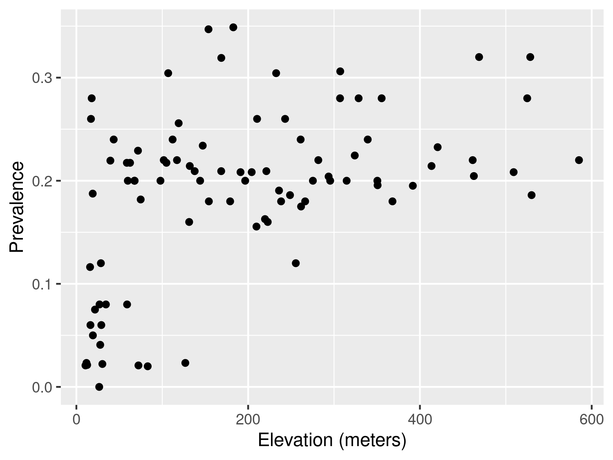

liberia$prev <- liberia$npos/liberia$ntest
ggplot(liberia, aes(x = elevation, y = prev)) + geom_point() +
labs(x="Elevation (meters)",y="Prevalence")

| Function | R Package | Used for |
|---|---|---|
lmer |
lme4 |
Fitting linear mixed models |
glmer |
lme4 |
Fitting generalized linear mixed models |
glgm |
RiskMap |
Fitting generalized linear geostatistical models |
s_variogram |
RiskMap |
Computing the empirical variogram and carrying out permutation test for spatial independence |
As illustrated in Figure 1.8, exploratory analysis is the first step that should be carried out in a statistical analysis. This stage is essential to inform how covariates should be introduced in the model and, in our case, whether the variation unexplained by those covariates exhibits spatial correlation.
In the exploratory analysis of count data, we will also look at how overdispersion, which is a necessary, though not sufficient, condition for residual spatial correlation.
Assessment of the association between the health outcome of interest and non-categorical (i.e. continuous) risk factors can be carried using graphical tools, such scatter plots. The graphical inspection of the empirical association between the outcome and the covariates is especially useful to identify non-linear patterns in the relationship which should then be accounted for in the model formulation.
In this section, we look more closely at the case when the observed outcome is a count which requires a different treatment from continuously measured outcomes, which are generally covered by most statistics textbooks (see, for example, Chapter 1 of Weisberg (2014)).
Let us first consider the example of the river-blindness data in Liberia (Section 1.4.2), and examine the association between prevalence and elevation. We first generate a plot of the prevalence against the measured elevation at each of the sample locations
liberia$prev <- liberia$npos/liberia$ntest
ggplot(liberia, aes(x = elevation, y = prev)) + geom_point() +
labs(x="Elevation (meters)",y="Prevalence")The plot shown in Figure 3.1 shows that, as elevation increases from 0 to around 150 meters, prevalence rapidly increases to around 0.25 and, for larger values in elevation than 150 meters, the relationship levels off. This begs the question of how we can account for this in a regression model. To answer this question rigorously, however, the plot in Figure 3.1 cannot be used. This is because, when the modelled outcome is a bounded Binomial count, regression relationships are specified on the logit-transformed prevalence (log-odds) scale; see Table 1.3 in Section Section 1.5 . To explore regression relationships in the case of prevalence data, it is convenient to use the so-called empirical logit in place of the empirical prevalence. The empirical logit is defined as
\[ l_{i} = \log\left\{\frac{y_i + 1/2}{n_i - y_i + 1/2}\right\} \tag{3.1}\]
where \(y_i\) are the number of individuals who tested positive for river-blindness and \(n_i\) is the total number of people tested at a location. The reason for using the empirical logit, rather than the standard logit transformation applied directly to the empirical prevalence, is that it allows to generate finite values for empirical prevalence values of 0 and 1, for which the standard logit transformation is not defined.
# The empirical logit
liberia$elogit <- log((liberia$npos+0.5)/
(liberia$ntest-liberia$npos+0.5))
ggplot(liberia, aes(x = elevation, y = elogit)) + geom_point() +
# Adding a smoothing spline
labs(x="Elevation (meters)",y="Empirical logit") +
stat_smooth(method = "gam", formula = y ~ s(x),se=FALSE)+
# Adding linear regression fit with log-transformed elevation
stat_smooth(method = "lm", formula = y ~ log(x),
col="green",lty="dashed",se=FALSE) +
# Adding linear regression fit with change point in 150 meters
stat_smooth(method = "lm", formula = y ~ x + pmax(x-150, 0),
col="red",lty="dashed",se=FALSE)
Figure 3.2 shows the scatter plot of the empirical logit against elevation. In this plot, we have also added three lines though the stat_smooth from the ggplot2 package. Using this function, we first pass the term gam to method to add a penalized smoothing spline (Hastie, Tibshirani, and Friedman 2001), represented by the blue solid line. The smoothing spline allows us to better discern how the type of relationship and how to best capture it using a standard regression approach. As er can see from Figure 3.2, the smoothing spline corroborates our initial observation of a positive relationship up to about 150 meters, followed by a plateau.
To capture this non-linear relationship, we can use the two following approaches. The first is based on a simple log-transformation of elevation and is represented in Figure 3.2 by the green line. If were to express this relationship using a standard Binomial regression model, this would take the form \[ \log\left\{\frac{p(x_i)}{1-p(x_i)}\right\} = \beta_0 + \beta_1 \log\{e(x_i)\} \tag{3.2}\] where \(p(x_i)\) and \(e(x_i)\) are the river-blindness prevalence and elevation at sampled location \(x_i\), respectively.
Alternatively, the non-linear effect of elevation on prevalence could be captured using a linear spline. Put in simple terms, we want to fit a linear regression model that allows for a change in slope above 150 meters. Formally, this is expressed in a Binomial regression model as \[
\log\left\{\frac{p(x_i)}{1-p(x_i)}\right\} = \beta_0 + \beta_1 e(x_i) + \beta_{2} \max\{e(x_i)-150, 0\}.
\tag{3.3}\] Based on the equation above, the effect of elevation below 150 meters is quantified by the parameter \(\beta_1\). Above 150 meters, instead, the effect of elevation becomes \(\beta_1 + \beta_2\). Note that the function pmax (and not the standard base function max) should be used in R when the computation of the maximum between a scalar value and each of the components of a numeric vector is required.
Before proceeding further, it is important to explain the differences between the use of the logarithmic transformation (Equation 3.2) and the linear spline (Equation 3.3). We observe that both curves provide a similar fit to the data, with larger differences observed for larger values in elevation, where the log-transformed elevation models yields larger values for the predicted prevalence. This also suggests that if we were to extrapolate the predictions beyond 600 meters in elevation the implied pattern by the model with the log-transformed elevation would predict an increasingly larger elevation, which is unrealistic, since the fly that transmits the diseases cannot breed at those altitudes. The linear spline model instead would generate predictions that would be very similar to those observed between 150 and 600 meters. From this point view, the linear spline model would thus have more scientific validity than the other model. However, which of the two approaches should be chosen to model the effect of elevation is a question that closely depends on the research question to be addressed.
If the interest of the study was in better understanding the association between elevation and prevalence, the linear spline model does not only provide a more credible explanation but also its regression parameters can be more easily interpreted. In fact, for a unit increase in elevation, the multiplicative change in the odds for river-blindness is \(\exp\{\beta_1\}\), if elevation is below 150 meters, and \(\exp\{\beta_1+\beta_2\}\), if elevation is above 150 meters. When instead we use the log-transformed elevation, the interpretation of \(\beta_1\) in Equation 3.2 is slightly more complicated, as it is based on the multiplicative increase in elevation by the same amount given by the base of the algorithm, which is about \(e \approx 2.718\)1. To avoid this, one could rescale the regression coefficient as, for example, \(\beta_1/\log_{2}(e)\) which would be interpreted as the multiplicative change in the odds for river-blindness for a doubling in elevation. However, a doubling in elevation is less meaningful when considering larger values of elevation.
When the goal of statistical analysis is instead in developing a predictive model for the outcome of interest, the explanatory power and interpretability of the model may be of less concern. For this reason, the model with the log-transformed model could be preferred over the model with the linear spline, if it shown to yield more predictive power. We will come back to this point again in Chapter 4, where will show how to assess and compare the predictive performance of different geostatistical models.
The other type of aggregated count data that we consider are unbounded counts. The Anopheles mosquitoes data-set (Section 1.4.4) is an example of this, since there is no upper limit to the number of mosquitoes that can be trapped at a location. Let us consider the covariate represented by elevation. In this case, the simplest model that can be used to analyse the data is a Poisson regression, where the linear predictor is defined on the log of the mean number of mosquitoes (Table 1.3). Hence, exploratory plots for the association with covariates should be generated using the log transformed counts of mosquitoes. In this instance, to avoid taking the log of zero, we can add 1 to the reported counts, if required. The variable of the An.gambiae in the anopheles data-set does not contain any 0, hence we simply apply the log tranformation without adding 1.
anopheles$log_counts <- log(anopheles$An.gambiae)
ggplot(anopheles, aes(x = elevation, y = log_counts)) + geom_point() +
# Adding a smoothing spline
labs(x="Elevation (meters)",y="Log number of An. gambiae mosquitoes") +
stat_smooth(method = "lm", formula = y ~ x, se=FALSE)The scatter plot of Figure 3.3 shows that there is a negative, though weak, association, with the average number of mosquitoes decreasing for increasing elevation. In this instance, the assumption of a linear relationship with elevation would be a reasonable choice.
We now consider the malaria data from Kenya (Section 1.4.3) where the main outcome is the result from a rapid diagnostic test (RDT) for malaria from individuals within households. In this case, because the outcome only takes two values, 1 for a positive RDT test result and 0 otherwise, the direct application of the empirical logit from Equation 3.1 would not help us to generate informative scatter plots. Throughout the book, we will consider the data from the community survey only, hence we work with a subset of the data which we shall name malkenya_comm
malkenya_comm <- malkenya[malkenya$Survey=="community", ]To show how this issue can be overcome, let us consider the variables age and gender. To generate a plot that can help us understand between the relationship with malaria prevalence and the two risk factors, we proceed as follows.
Using the cut function, we first split age (in years) into classes through the argument breaks. The classification of age into \([0,5]\), \((5, 10]\) and \((10, 15]\) is common in many malaria epidemiology studies, as children are one of the groups at highest risk malaria. The choice of the other classes of age reflects instead the need to balance the number of observations falling in each of the classes.
We then compute the empirical logit, using the total number of cases within age group and by gender. For a given age group and gender, which we denote as \(\mathcal{C}\), the empirical logit in Equation 3.1, now takes the form \[
l_{\mathcal{C}} = \log\left\{\frac{\sum_{i \in \mathcal{C}} y_{i} + 0.5}{|\mathcal{C}|- \sum_{i \in \mathcal{C}} y_{i} + 0.5} \right\}
\tag{3.4}\] where \(y_i\) are the individual binary outcomes and \(i\in \mathcal{C}\) is used to indicate that the sum is carried out over all the individuals who belong the class \(\mathcal{C}\), identified by a specific age group and gender. Finally, \(|\mathcal{C}|\) is the number of individuals who fall within \(\mathcal{C}\). In the code above, the empirical logit in Equation 3.4 is computed using the aggregate function. An inspection of the object age_class_data, a data frame, shows that the empirical is found in the column named RDT.
# Computation of the average age within each age group
age_class_data$age_mean_point <- aggregate(Age ~ Age_class + Gender,
data = malkenya_comm,
FUN = mean)$Age
# Number of individuals within each age group, by gender
age_class_data$n_obs <- aggregate(Age ~ Age_class + Gender,
data = malkenya_comm,
FUN = length)$AgeIn order to generate the scatter-plot, we compute the average age within each age group by gender, and use these as our values for the x-axis. Note that since we only need to obtain the average age from this output, we use $Age to extract this only and allocate to the column age_mean_point. Finally, we also compute the number of observations within each of classes and place this in n_obs.
ggplot(age_class_data, aes(x = age_mean_point, y = RDT,
size = n_obs,
colour = Gender)) +
geom_point() +
labs(x="Age (years)",y="Empirical logit") The resulting plot in Figure 3.4 shows the empirical logit against age by gender, with the size of each of the points proportional to the number of observations falling within each class. The observed patterns are explained by the fact that young children, especially those under the age of five, are particularly vulnerable to severe malaria infections. This is primarily due to their immature immune systems and lack of acquired immunity. As individuals grow older, they generally develop partial immunity to malaria through repeated exposure to the disease. This acquired immunity can provide some level of protection against severe malaria. At the same time, gender roles and activities can influence exposure to malaria-carrying mosquitoes. For example, men may spend more time outdoors for work or other activities, increasing their exposure to mosquito bites and thus their risk of infection. In addition, there are also biological factors to consider. Hormonal and genetic differences between males and females may also contribute to variations in immune responses to malaria infection. The interaction between age and gender is complex and may vary depending on the specific context and population being studied. A 2020 report from the Bill & Melinda Gates foundation provides a detailed overview of this and other aspects related to gender and malaria (Katz and Bill & Melinda Gates Foundation 2020).
To account for age in a model for malaria prevalence, several approaches are possible, some of which have been developed using biological models (Smith et al. 2007). To model the patterns observed in Figure 3.4, we can follow the same approach used in the previous section to model the relationship between elevation and river-blindness prevalence. First, let us consider age without the effect of gender. Let \(p_{j}(x_i)\) denote the probability of a positive RDT for the \(j\)-th individual living in a household at location \(x_i\). Assuming that malaria risk reaches its peak at 15 years of age, we can capture the non-linear relationship using a linear spline with two knots, one at 15 years and a second one at 40 years. This is expressed as \[ \begin{aligned} \log\left\{\frac{p_{j}(x_i)}{1-p_j(x_i)}\right\} = \beta_{0} + \beta_{1}a_{ij}+\beta_{2} \times\max\{a_{ij}-15, 0\} + \beta_{3}\max\{a_{ij}-40, 0\} \end{aligned} \tag{3.5}\] where \(a_{ij}\) is the age, in years, for the \(j\)-th individual at household \(i\). Based on this model the effect of age on RDT prevalence is \(\beta_{1}\), for \(a_{ij} < 15\), \(\beta_{1}+\beta_{2}\), for \(15 < a_{ij} < 40\), and \(\beta_{1}+\beta_{2}+\beta_{3}\) for \(a_{ij} > 40\).
Figure 3.4 indicates that age may interact with gender, meaning that the effect of gender on RDT prevalence changes across age, with larger differences observed between males and females for ages above 20 years. To assess such differences using a standard Binomial regression model, the linear predictor for RDT prevalence can be formulated as \[ \begin{aligned} \log\left\{\frac{p_{j}(x_i)}{1-p_j(x_i)}\right\} = \beta_{0} + (\beta_{1} + \beta_{1}^*g_{ij})\times a_{ij}+(\beta_{2} + \beta_{2}^*g_{ij})\times\max\{a_{ij}-15, 0\} + \\ (\beta_{3} + \beta_{3}^*g_{ij}) \times \max\{a_{ij}-40, 0\} \end{aligned} \tag{3.6}\] where \(g_{ij}\) is the indicator for gender, with 1 corresponding to male and 0 to female. The coefficients \(\beta_{1}^*\), \(\beta_{2}^*\) and \(\beta_{3}^*\) thus quantify the differences in risk between the two genders for ages below 15 years, betwee 15 and 40 years, and above 40 years, respectively. If all of those coefficients were 0, the model in Equation 3.5 would be recovered.
glm_age_gender_interaction <- glm(RDT ~ Age + Gender:Age +
pmax(Age-15, 0) + Gender:pmax(Age-15, 0) +
pmax(Age-40, 0) + Gender:pmax(Age-40, 0),
data = malkenya_comm, family = binomial)
summary(glm_age_gender_interaction)
##
## Call:
## glm(formula = RDT ~ Age + Gender:Age + pmax(Age - 15, 0) + Gender:pmax(Age -
## 15, 0) + pmax(Age - 40, 0) + Gender:pmax(Age - 40, 0), family = binomial,
## data = malkenya_comm)
##
## Coefficients:
## Estimate Std. Error z value Pr(>|z|)
## (Intercept) -1.05835 0.10245 -10.331 < 2e-16 ***
## Age -0.03384 0.01310 -2.584 0.00978 **
## pmax(Age - 15, 0) -0.03975 0.02356 -1.687 0.09162 .
## pmax(Age - 40, 0) 0.09170 0.02482 3.695 0.00022 ***
## Age:GenderMale 0.01428 0.01221 1.170 0.24202
## GenderMale:pmax(Age - 15, 0) -0.03625 0.03145 -1.153 0.24908
## GenderMale:pmax(Age - 40, 0) 0.02451 0.04320 0.567 0.57052
## ---
## Signif. codes: 0 '***' 0.001 '**' 0.01 '*' 0.05 '.' 0.1 ' ' 1
##
## (Dispersion parameter for binomial family taken to be 1)
##
## Null deviance: 2875.8 on 3351 degrees of freedom
## Residual deviance: 2673.8 on 3345 degrees of freedom
## AIC: 2687.8
##
## Number of Fisher Scoring iterations: 5The code above shows how to fit the model specified in Equation 3.6. The terms Age, pmax(Age-15, 0) and pmax(Age-40, 0) respectively correspond to \(\beta_{1}\), \(\beta_{2}\) and \(\beta_{3}\), whilst the Gender:Age, Gender:pmax(Age-15, 0) and Gender:pmax(Age-40, 0) to \(\beta_{1}^*\), \(\beta_{2}^*\) and \(\beta_{3}^*\), respectively. In the summary of the fitted model, we observe that the interaction coefficients are non-statistically significant. However, removing the interaction based on the fact that each of the coefficients have each p-values larger than the conventional level of 5% would be wrong. Instead we should carry out the likelihood ratio test, as shown below.
glm_age_gender_no_interaction <- glm(RDT ~ Age + pmax(Age-15, 0) + pmax(Age-40, 0),
data = malkenya_comm, family = binomial)
anova(glm_age_gender_no_interaction, glm_age_gender_interaction, test = "Chisq")To carry out the likelihood ratio test to assess the null hypothesis that \(\beta_{1}^*=\beta_{2}^*=\beta_{3}^*=0\), we first fit the simplified nested model under this null hypothesis. The likelihood ratio test can then be carried out using the anova command as shown. The p-value indicates that the we do not find evidence against the null hypothesis, hence in our analysis of the data we might favour the simplified model that does not assumes an interaction between the two genders.
The approach just illustrated, can also be applied to explore the association with other continuous variables that are a property of the household and not of the individual. Let us, for example, consider the variable elevation from the malkenya data-set.
Following the same approach used for age, we first split elevation into classes. To define these, we use the deciles of the empirical distribution of elevation which we calculate using the quantile function above. In this way we also ensure that the number of observations falling within each class of elevation is approximately the same.
# Computation of the empirical logit by classes of elevation
elev_class_data <- aggregate(RDT ~ elevation_class,
data = malkenya_comm,
FUN = function(y)
log((sum(y)+0.5)/(length(y)-sum(y)+0.5)))
# Computation of the average elevation within each class of elevation
elev_class_data$elevation_mean <- aggregate(elevation ~ elevation_class,
data = malkenya_comm,
FUN = mean)$elevationWe then compute the empirical logit and the average elevation for each class of elevation. The empirical logit is computed as already defined in Equation 3.4, where now the definition of \(\mathcal{C}\) is given by a specific decile used to split the distribution of elevation.
ggplot(elev_class_data, aes(x = elevation_mean, y = RDT),
size = n_obs) +
geom_point() +
labs(x="Elevation (meters)",y="Empirical logit") The resulting plot in Figure 3.5 shows an approximately linear relationship with decreasing values of the empirical logit for increasing elevation. This is expected because the cooler environment at higher altitudes is less favourable to the development of the overall mosquito life cycle.
An alternative approach to generate a scatter plot for assessing the association between elevation and the empirical logit would be to aggregate the data at household level, rather than using classes of elevation. However, this approach does not work as the one illustrated above when only one individual is sampled for each location. In the case of the malkenya data, the great majority of the locations only include one individual making this second approach less useful than the one illustrated.
Other more sophisticated approaches for the exploration of the associations between covariates and binary outcomes are available. For example, the use of the empirical logit could be avoided by using non-parametric regression methods for Binomial outcomes (Bowman 1997), also implemented in sm package in R. Our view is that a careful exploratory analysis based on simpler methods, as those illustrated above, can be equally effective to inform the module formulation.
One of the main advantages in the use of covariates is the ability to attribute part of the variation of the outcome to a set of measured variables and, hence, reduce the uncertainty of our inferences. However, it almost always the case that the finite number of covariates at our disposal is not enough to fully explain the variation in the outcome. In other words, the existence of unmeasured covariates that are related to the modelled outcome give rise to the so called residual variation. In a standard linear regression model the extent to which we are able to account for important covariates is directly linked to the size of the variance of the residuals. In the case of count data, instead, this link is less well defined and one of the main consequences of the omission of covariates, which we address in this chapter, is overdispersion.
Overdispersion occurs when the variability of the data is larger than that implied by the generalized linear model (GLM) fitted to them. For example, if we consider the Binomial distribution, the presence of overdispersion implies that \(V(Y_i) > n_i \mu_{i}(1-\mu_i)\), where we recall that \(n_i\) is the Binomial denominator and \(mu_i\) is the probability of “success†for each of the \(n_i\) Bernoulli trials; for a Poisson distribution with \(E(Y_i) = \mu_i\), instead, overdispersion implies that \(V(Y_i) > \mu_{i}\).
Assessment of the overdispersion for count data can be carried out in different ways depending on the goal of the statistical analysis. Since the focus of this book is to illustrate how to formulate and apply geostatistical models, the most natural approach to assess overdispersion is through the use of generalized linear mixed models (GLMMs). The class of GLMMs that we consider in this and the next section are obtained by replacing the spatial Gaussian process \(S(x_i)\) in introduced in Equation 1.4 with a set of mutually independent random effects, which we denote as \(Z_i\), and thus write \[ g(\mu_i) = d(x_i)^\top \beta + Z_i. \tag{3.7}\] The model above accounts for the overdispersion in the data through \(Z_i\) whose variance can be interpreted as an indicator of the amount of overdispersion. To show this, we carry out a small simulation as follows. For simplicity, we consider the Binomial mixed model with an intercept only, hence \[ \log\left\{\frac{\mu_i}{1-\mu_i}\right\} = \beta_0 + Z_i \tag{3.8}\] and assume that the \(Z_i\) follow a set of mutually independent Gaussian variables with mean 0 and variance \(\tau^2\). In our simulation we vary \(\beta_0\) over the set \(\{-3, -2, -1, 0, 1, 2, 3\}\) and set \(\tau^2=0.1\) and the binomial denominators to \(n_i = 100\). For a given value of \(\beta_0\), we then proceed through the following iterative steps.
Simulate 10,000 values for \(Z_i\) from a Gaussian distribution with mean 0 and variance \(\tau^2\).
Compute the probabilities \(\mu_i\) based on Equation 3.8.
Simulate 10,000 values from a Binomial model with probability of success \(\mu_i\) and denominator \(n_i\).
Compute the empirical variance of the counts \(y_i\) simulated in the previous step.
Change the value of \(\beta_0\) and repeat the previous steps, for all the values of \(\beta_0\).
The code below shows the implementation of the above steps in R.
# Number of simulations
n_sim <- 10000
# Variance of the Z_i
tau2 <- 0.1
# Binomial denominator
bin_denom <- 100
# Intercept values
beta0 <- c(-3, -2, -1, 0, 1, 2, 3)
# Vector where we store the computed variance from
# the simulated counts from the Binomial mixed model
var_data <- rep(NA, length(beta0))
for(j in 1:length(beta0)) {
# Simulation of the random effects Z_i
Z_i_sim <- rnorm(n_sim, sd = sqrt(tau2))
# Linear predictor of the Binomial mixed model
lp <- beta0[j] + Z_i_sim
# Probabilities of the Binomial distribution conditional on Z_i
prob_sim <- exp(lp)/(1+exp(lp))
# Simulation of the counts from the Binomial mixed model
y_i_sim <- rbinom(n_sim, size = bin_denom, prob = prob_sim)
# Empirical variance from the simulated counts
var_data[j] <- var(y_i_sim)
}
# Probabilities from the standard Binomial model (Z_i = 0)
probs_binomial <- exp(beta0)/(1+exp(beta0))
# Variance from the standard Binomial model
var_bimomial <- bin_denom*probs_binomial*(1-probs_binomial)matplot(beta0, cbind(var_data, var_bimomial), type = "b", pch = 20,
lty = "solid", ylab = "Variance", xlab = expression(beta[0]))
legend(-3, 80, c("Binomial mixed model", "Standard Binomial model"),
col=1:2, lty = "solid", cex = 0.75)Figure 3.6 shows the results of the simulation. In this figure, the red line corresponds to the variance of a standard Binomial model, obtained by setting \(Z_i=0\) and computed as \(n_i \mu_i (1-\mu_i)\) with \(\mu_i = \exp\{\beta_0\}/(1+\exp\{\beta_0\})\). As expected, this plot shows that the variance of the simulated counts from the mixed model in Equation 3.8 exhibit a larger variance than would be expected under the standard Binomial model. It also indicates that the chosen value for the variance of \(Z_i\) of \(\tau^2 = 0.1\) corresponds to a significant amount of dispersion. One way to relate \(\tau^2\) to the amount of overdispersion is by considering that, following from the properties of a univariate Gaussian distribution, a priori the \(Z_i\) will take values between \(-1.96 \sqrt{\tau^2}\) and \(+1.96 \sqrt{\tau^2}\) with approximately 95\(\%\) probability. That implies that \(\exp\{Z_i\}\), which expresses the effect of the random effects on the odds ratios, will be with 95\(\%\) probability between \(\exp\{-1.96 \sqrt{\tau^2}\}\) and \(\exp\{+1.96 \sqrt{\tau^2}\}\). By replacing \(\tau^2\) with the chosen values for the simulation, those two becomes about 0.54 and 1.86, meaning that with the \(Z_i\) with \(95\%\) probability will have a multiplicative effect on the odds ratios between \(0.54\) and \(1.86\).
We encourage you to do Exercise 1 and Exercise 2 at the end of this chapter, to further explore how generalized linear mixed models can be used as a tool to account for overdispersion.
We now illustrate how to fit a generalize linear mixed, using the anopheles data-set as an example. We consider two models: an intercept-only model and one that uses elevation as a covariate. Let \(\mu(x_i)\) be the number of mosquitoes captured at a location \(x_i\); then the linear predictor with elevation as a covariate takes the form \[
\log\{\mu_i\} = \beta_{0} + \beta_{1} d(x_i) + Z_i
\tag{3.9}\] where \(d(x_i)\) indicates the elevation in meters at location \(x_i\) and the \(Z_i\) are independent and identically distributed Gaussian variables with mean 0 and variance \(\tau^2\). The model with an intercept only is simply obtained by setting \(\beta_1 = 0\).
We carry out the estimation in R using the glmer function from the lme4 package (see Bates et al. (2015) for a detailed tutorial). The glmer function implements the maximum likelihood estimation for generalized linear mixed models. The code below shows how the glmer is used to carry out this step for the model in Equation 3.9 and the one withuot covariates.
# Create the ID of the location
anopheles$ID_loc <- 1:nrow(anopheles)
# Poisson mixed model with elevation
fit_glmer_elev <- glmer(An.gambiae ~ scale(elevation) + (1|ID_loc), family = poisson,
data = anopheles, nAGQ = 25)
# Poisson mixed model with intercept only
fit_glmer_int <- glmer(An.gambiae ~ (1|ID_loc), family = poisson,
data = anopheles, nAGQ = 25)To fit the model with glmer, we first must create a variable in our data-set that allows us to identify the location associated with each count. In this case, since every row corresponds to a different location, we simply use the row number to identify the locations and save this in the ID_loc variable. The random effects \(Z_i\) are then included in the model by adding (1 | ID_loc) in the formula of the glmer function.
When introducing the variable elevation, we standardize the variable so that its mean is 0 and its variance is 1. This is done to aid the convergence of the algorithm used to fit the model and it is generally considered good practice, especially when many variables with different scales are used as covariates. However, we emphasize that standardizing a variable does not affect the fit of the model to the data. This is because the model with the standardized variable is a reparametrization of the model with the unstandardized variable. In other words, a model that uses standardized covariates only attaches a different interpretation to its regression coefficients while maintaining the same goodness of fit of the model with that uses the covariates on their original scale.
The argument nAGQ is used to define the precision of the approximation of the maximum likelihood estimation algorithm. By default nAGQ = 1, which corresponds to the Laplace approximation. Values for nAGQ larger than 1 are used to define the number of points of the adaptive Gaussian-Hermite quadrature. The general principle is that the larger nAGQ the better, but at the expense of an increased computing time. Based on the guidelines and help pages of the lme4 package, it is stated that a reasonable value for nAGQ is 25. For more technical details on this aspect, we refer the reader to Bates et al. (2015).
We can now look at the summary of the fitted models to the mosquitoes data-set.
### Summary of the model with elevation
summary(fit_glmer_elev)
## Generalized linear mixed model fit by maximum likelihood (Adaptive
## Gauss-Hermite Quadrature, nAGQ = 25) [glmerMod]
## Family: poisson ( log )
## Formula: An.gambiae ~ scale(elevation) + (1 | ID_loc)
## Data: anopheles
##
## AIC BIC logLik -2*log(L) df.resid
## 291.8 300.1 -142.9 285.8 113
##
## Scaled residuals:
## Min 1Q Median 3Q Max
## -0.89574 -0.42469 -0.09483 0.29445 0.53352
##
## Random effects:
## Groups Name Variance Std.Dev.
## ID_loc (Intercept) 0.7146 0.8453
## Number of obs: 116, groups: ID_loc, 116
##
## Fixed effects:
## Estimate Std. Error z value Pr(>|z|)
## (Intercept) 1.53042 0.09365 16.342 <2e-16 ***
## scale(elevation) -0.19794 0.08950 -2.212 0.027 *
## ---
## Signif. codes: 0 '***' 0.001 '**' 0.01 '*' 0.05 '.' 0.1 ' ' 1
##
## Correlation of Fixed Effects:
## (Intr)
## scale(lvtn) 0.036
### Summary of the model with the intercept only
summary(fit_glmer_int)
## Generalized linear mixed model fit by maximum likelihood (Adaptive
## Gauss-Hermite Quadrature, nAGQ = 25) [glmerMod]
## Family: poisson ( log )
## Formula: An.gambiae ~ (1 | ID_loc)
## Data: anopheles
##
## AIC BIC logLik -2*log(L) df.resid
## 294.6 300.1 -145.3 290.6 114
##
## Scaled residuals:
## Min 1Q Median 3Q Max
## -0.73816 -0.42718 -0.06941 0.26564 0.45022
##
## Random effects:
## Groups Name Variance Std.Dev.
## ID_loc (Intercept) 0.761 0.8724
## Number of obs: 116, groups: ID_loc, 116
##
## Fixed effects:
## Estimate Std. Error z value Pr(>|z|)
## (Intercept) 1.52849 0.09584 15.95 <2e-16 ***
## ---
## Signif. codes: 0 '***' 0.001 '**' 0.01 '*' 0.05 '.' 0.1 ' ' 1From the summary of the model that uses elevation, we observe the that the estimated regression coefficient \(\beta_{1}\) is statistically significant different from 0. The interpretation of the estimated regression coefficient is the following: for an increase of about 100 meters in elevation, all other things being equal, the average number of mosquitoes decreases by about \(100\% \times [1-\exp\{-0.19794\}] \approx 18\%\). Note that when using a standardized variable, a unit increase for this corresponds to an increase in the original unstandardized variable equal to its standard deviation, which for the elevation variable is about 100 meters.
From the summaries of the two models, under Random effects:, we obtain the estimates associates with the random effects introduced in the model. In this case, since we only have introduced \(Z_i\), this part of summary provides the maximum likelihood estimate for \(\tau^2\), the variance of \(Z_i\), which found on the line where ID_loc is printed. We then observe that the estimates for \(\tau^2\) for the intercept-only model is 0.761, whilst for the model with elevation this is 0.7146. Note that the figures reported under Std.Dev. are simply the square root of the value reported under Variance. As expected, the introduction of elevation contributes to the explanation of the residual variation captured by \(Z_i\), though by a very small amount. The estimated values of \(\tau^2\) thus suggest that there is extra-Binomial variation in the data that is not account for by elevation.
In the next section, we will illustrate how to assess the presence of residual correlation for continuous measurements and overdispersed count data.
In its most basic form, the concept of spatial correlation can be succinctly encapsulated by Tobler (1970) first law of geography, which posits that “everything is interconnected, but objects in close proximity exhibit stronger relationships than those situated farther apart.†After we have identified the key variables to introduce as covariates in the model (Section 3.1.1) and, in the case of count data, assessed the presence of overdispersion (Section 3.1.2), our final exploratory step consists of assessing whether the residuals of the non spatial model show evidence of spatial correlation. Hence, in geostatistical modelling, the interest is not in the spatial correlation of the data, but rather on understanding whether the variation in the outcome unexplained by the covariates exhibits spatial correlation. We call this residual spatial correlation, to emphasize that spatial correlation is a concept relative to the covariates that we have introduced in the model.
In the context of geostatistical analysis, the tool that is generally used to assess the residual spatial correlation is the the so called empirical variogram. Before looking at the mathematical definition of the empirical variogram, let us consider a generalized linear mixed model as expressed in Equation 3.7. Our goal is then to question the assumption of independently distributed random effects \(Z_i\) by asking whether the \(Z_i\) show evidence of spatial correlation. Let \(Z_i\) and \(Z_j\) be two random effects that are associate with two different locations \(x_i\) and \(x_j\), respectively, and let us take the squared difference between the two \[ V_{ij} = (Z_i - Z_j)^2. \tag{3.10}\] How does the spatial correlation affect the value of \(V_{ij}\)? To answer this question, we can refer to the aforementioned Tobler’s law of geography. When \(x_i\) and \(x_j\) will be closer to each other, then \(Z_i\) and \(Z_j\) will also tend to be more similar to each other, thus making \(V_{ij}\) smaller, on average. On the contrary, when \(x_i\) and \(x_j\) will be further apart, then \(V_{ij}\) will become larger, on average. We can then construct the empirical variogram by considering all possible pairs of locations \(x_i\) and \(x_j\), for which we then compute \(V_{ij}\) and plot this against the distance between \(x_i\) and \(x_j\), which we denote as \(u_{ij}\). If there is spatial correlation in the random effects \(Z_i\), then this will manifest as an average increase in the \(V_{ij}\) as \(u_{ij}\) increases. However, there are still two issues that we have to address before we can generate and plot the empirical variogram.
The first issue is that we do not observe \(Z_i\) as, by definition, this is a latent variable. Hence, we require an estimate for \(Z_i\) which we can then feed into \(V_{ij}\). To emphasize this point, from now on, we shall replace Equation 3.10 with \[
\hat{V}_{ij} = (\hat{Z}_{i} - \hat{Z}_j)^2.
\tag{3.11}\] Several options are available for estimating \(Z_{i}\). Our choice is to use the model of the predictive distribution of \(Z_i\), that is the distribution of \(Z_{i}\) conditioned to the data \(y_i\). This estimator for \(Z_i\) is also readily available from the output of the lmer and glmer functions of the lme4 package, as we will illustrate later in our example in this section.
The second issue is that if simply plot \(\hat{V}_{ij}\) against the distances \(u_{ij}\) (also knwon as cloud variogram), due to the high noiseness in the \(\hat{V}_{ij}\), it may be quite difficult to assess the presence of an increasing trend in the \(\hat{V}_{ij}\) and thus detect spatial correlation. Hence, it is general practice to group the distances \(u_{ij}\) into classes, say \(\mathcal{U}\), and then take average of all the \(\hat{V}_{ij}\) that fall within \(\mathcal{U}\).
We can now write the formal definition of the empirical variogram as \[ \hat{V}(\mathcal{U}) = \frac{1}{2 |\mathcal{U}|} \sum_{(i, j): (u_i, u_j) \in \mathcal{U}} \hat{V}_{ij} \tag{3.12}\] where \(|\mathcal{U}|\) denotes the number of pairs of locations that fall within the distance class \(\mathcal{U}\). The rationale behind dividing by 2 in \(1/2 |\mathcal{U}|\) from the above equation, will be elucidated in Section 3.2, and there is no need for us to delve into this matter at this juncture. When creating the empirical variogram plot, we select the midpoint values of the distance classes \(\mathcal{U}\) to represent the x-axis values.
Before we can evaluate residual spatial correlation, there remains one crucial concern: relying solely on a visual inspection of the empirical variogram is susceptible to human subjectivity. Furthermore, it is worth noting that even a seemingly upward trend observed in the empirical variogram might be merely a product of random fluctuations, rather than a reliable indication of actual residual spatial correlation. To address these concerns and enhance the objectivity of the use of the empirical variogram, one approach would involve comparing the observed empirical variogram pattern with those generated in the absence of spatial correlation. Following this principle, we then use a permutation test that allows us to generate empirical variograms under the assumption of absence of spatial correlation through the following iterative steps.
Permute the order of the locations in the data-set while keeping everything else fixed.
Compute the empirical variogram \(\hat{V}(\mathcal{U})\) for the permuted data-set.
Repeat 1 and 2 a large number of times, say 10,000.
Use the resulting 10,000 empirical varigorams to compute 95\(\%\) confidence intervals, by taking the 0.025 and 0.975 quantiles of these for each distance class \(\hat{V}(\mathcal{U})\).
If the observed empirical variogram falls fully within the envelope generated in the previous point, we then conclude that the data do not exhibit residual spatial correlation. If, instead, the observed empirical variogram partly falls outside the envelope we conclude that the data do exhibit residual spatial correlation.
We now show an application of all the concepts introduced in this section to the Liberia data on river-blindness.
We consider the Binomial mixed model that uses the log-transformed elevation as a covariate to model river blindness prevalence, hence \[
\log\left\{\frac{p(x_i)}{1-p(x_i)}\right\} = \beta_{0} + \beta_{1}\log\{e(x_i)\} + Z_i
\tag{3.13}\] where \(e(x_i)\) is the elevation in meters at location \(x_i\) and the \(Z_i\) are i.i.d. Gaussian variables with mean 0 and variance \(\tau^2\). We first fit the model above using the glmer function.
# Convert the data-set into an sf object
liberia <- st_as_sf(liberia, coords = c("lat", "long"), crs = 4326)
# Create the ID of the location
liberia$ID_loc <- 1:nrow(liberia)
# Binomial mixed model with log-elevation
fit_glmer_lib <- glmer(cbind(npos, ntest) ~ log(elevation) + (1|ID_loc), family = binomial,
data = liberia, nAGQ = 25)
summary(fit_glmer_lib)Generalized linear mixed model fit by maximum likelihood (Adaptive
Gauss-Hermite Quadrature, nAGQ = 25) [glmerMod]
Family: binomial ( logit )
Formula: cbind(npos, ntest) ~ log(elevation) + (1 | ID_loc)
Data: liberia
AIC BIC logLik -2*log(L) df.resid
127.9 135.4 -61.0 121.9 87
Scaled residuals:
Min 1Q Median 3Q Max
-2.46033 -0.63341 -0.07633 0.61995 3.12732
Random effects:
Groups Name Variance Std.Dev.
ID_loc (Intercept) 0.003097 0.05565
Number of obs: 90, groups: ID_loc, 90
Fixed effects:
Estimate Std. Error z value Pr(>|z|)
(Intercept) -2.96292 0.21184 -13.987 < 2e-16 ***
log(elevation) 0.26143 0.04071 6.422 1.35e-10 ***
---
Signif. codes: 0 '***' 0.001 '**' 0.01 '*' 0.05 '.' 0.1 ' ' 1
Correlation of Fixed Effects:
(Intr)
log(elevtn) -0.981From the output, we observe that the estimate for \(\tau^2\) is about 0.003, indicating a moderate level of overdispersion in the data.
liberia$Z_hat <- ranef(fit_glmer_lib)$ID_loc[,1]Through the function ranef when extract the estimates of the random effects \(Z_i\) and save these in the data set. We then use the function s_variogram from the RiskMap package to compute the empirical varigoram for the estimated \(\hat{Z}_i\).
liberia_variog <- s_variogram(data = liberia,
variable = "Z_hat",
bins = c(15, 30, 40, 80, 120,
160, 200, 250, 300, 350),
scale_to_km = TRUE,
n_permutation = 10000)Through the argument bins we can specify the the classes of distance, previously denoted by \(\mathcal{U}\); check the help page of s_variogram to see how this is defined by default. The value passed to bins in the code above correspond to define the following classes of distance \(\mathcal{U}\): \([15, 30]\), \((30, 40]\) and so forth, with the last class being \([350, +\infty)\), i.e. all pairs of locations whose distances are above 350km. The argument n_permutation allows the user to specify the number of permutations that are performed the generate the envelope for absence of spatial correlation previously described.
dist_summaries(data = liberia,
scale_to_km = TRUE)
## $min
## [1] 3.204561
##
## $max
## [1] 514.9768
##
## $mean
## [1] 199.7156
##
## $median
## [1] 185.7845The dist_summaries function within the RiskMap package can be used for gauging the extent of the area covered by your dataset, aiding in the selection of appropriate values to be passed to the bins argument. In the provided output above, we can observe that for the Liberia dataset, the minimum and maximum distances span approximately 3km and 533km, respectively. While there is not a one-size-fits-all recommendation for setting bins, two fundamental principles should inform your decision-making. Firstly, it is advisable to avoid choosing overly large distance intervals, as the uncertainty associated with the empirical variogram tends to increase with distance due to fewer available pairs of observations for estimation. Secondly, especially when spatial correlation is not strong, it is crucial to carefully explore the behavior of the variogram at smaller distances. Consequently, it is generally advisable to experiment with different bins configurations and observe how they impact the pattern of the empirical variogram.
plot_s_variogram(liberia_variog,
plot_envelope = TRUE)Finally, the plot_s_variogram function enables us to visualize the empirical variogram and, through the plot_envelope argument, include the envelope generated by the permutation procedure. As illustrated in Figure 3.7, we observe that the empirical variogram falls outside the envelope at relatively short distances, typically below 30km. However, for distances exceeding 30km, the behavior of the empirical variogram does not significantly differ from variograms generated under the assumption of spatial independence. In summary, we interpret the evidence presented in Figure 3.7 as indicative of residual spatial correlation within the data. Nevertheless, it is essential to exercise caution when attempting to ascertain the scale of the spatial correlation using the empirical variogram. As we will emphasize throughout this book, the empirical variogram’s sensitivity to the choice of bins values renders it an unreliable tool for drawing statistical inferences. In other words, we advocate employing the empirical variogram primarily to assess the presence of residual correlation.
When using a linear model to assess spatial correlation, it is important to distinguish two cases: 1) when the data contain only one location per location; 2) when more than one observation per location is available. We now consider each of these two scenarios separately.
To illustrate the use of the variogram under this scenario, we shall use the Gailicia data on lead concentration in moss samples. The simplest possible model for the data is a standard linear model without covariates which assumes independence among the observations, hence \[ Y_i = \beta_0 + U_i \tag{3.14}\] where the \(U_i\) are i.i.d. Gaussian variables with mean zero and variance \(\omega^2\). At this stage, our goal is then to assess whether the assumption of independence for the \(Z_i\) is supported by the data or whether there is evidence of spatial correlation. However, the measurement error of the device may be present as part of the natural random variation in \(Z_i\) which might mask the detection of spatial correlation using the residuals \(Z_i\) challenging, especially is the measurement error dominates the spatial variation of the data. One would be tempted to introduce an additional, location-specific random effect, say \(Z_i\) with mean zero and variance \(\tau^2\) and fit the model \[ Y_i = \beta_0 + Z_i + U_i, \tag{3.15}\] where we interpret \(U_i\) as random variation due to the measurement device and \(Z_i\) as a random effect accounting for unmeasured covariates that contribute to the variation between locations in lead concentration. However, the model in Equation 3.15 is not identifiable because we cannot disentangle the separate contributions of \(Z_i\) and \(U_i\) from the variation of the data, unless: a) we know the precision of the measurement device, \(\omega\) (recall that \(\omega^2\) is the variance of \(U_i\)); b) or, if we do not know \(\omega\), we can then separate the two sources of variation only if we have multiple observations per location (the scenario which we shall consider in the next section).
For the Galicia data, for we do not know the measurement device precision and we only have one observation per location. However, this does not prevent us from using the variogram based on the residuals from Equation 3.14, while keeping in mind the limitations and uncertainty that are inherent to this exploratory tool as remarked at the end of the last paragraph.
# Fitting of the linear model and extraction of the residuals
lm_fit <- lm(log(lead) ~ 1, data = galicia)
galicia$residuals <- lm_fit$residuals
# Convert the galicia data frame into an "sf" object
galicia_sf <- st_as_sf(galicia, coords = c("x", "y"), crs = 32629)
# Compute the variogram, using the residuals from the linear model fit,
# and the 95% confidence level envelope for spatial independence
galicia_variog <- s_variogram(galicia_sf, variable = "residuals",
scale_to_km = TRUE,
bins = seq(10, 140, length = 15),
n_permutation = 10000)
# Plotting the results
plot_s_variogram(galicia_variog, plot_envelope = TRUE)In the code above, we first fit the linear model in Equation 3.14 and then extract the residuals from this. Note that for this simple model, the residuals of the model are obtained by simply centering the outcome to zero by subtracting its mean. However, for more complex linear models that use covariates the computation of the residuals is more involved and can be carried out through a simple extension of the code above by specifying an appropriate formula in the lm function.
Figure 3.8 shows the empirical variogram and the 95% envelope for spatial independence. This clearly shows that the measurement of lead concentration are spatially correlated.
For the case of more than one observation per location, we shall consider the italy_sim data-set. This data-set contains 10 observations per location, for a total of 200 locations. The variable ID_loc is a numeric indicator that can be used to identify the location each observation belong to. For this data-set, we use the population density, named pop_dens, as a log-transformed covariate; we leave you as an exercise to assess that is a reasonable modelling choice.
To specify a non-spatial mixed model for the outcome, we then use two subscripts: \(i\) to identify a given location; \(j\) to identify the \(j\)-th observation for a given location \(i\). We denote as \(Z_i\) the location-specific random effect ans as \(U_{ij}\) the random variation due to the measurement error inherent to each observation. Hence, we write \[
Y_{ij} = \beta_0 + \beta_1 \log\{d(x_i)\} + Z_i + U_{ij},
\tag{3.16}\] where \(d(x_i)\) is the population density at location \(x_i\); as before, we use \(\tau^2\) and \(\omega^2\) to denote the variances of \(Z_i\) and \(U_{ij}\), respectively. To fit this model to the data we use the lmer function from the lme4 package.
# Fitting a linear mixed model to the italy_sim data-set
# See main text for model specification
lmer_fit <- lmer(y ~ log(pop_dens) + (1|ID_loc), data = italy_sim)
summary(lmer_fit)
## Linear mixed model fit by REML ['lmerMod']
## Formula: y ~ log(pop_dens) + (1 | ID_loc)
## Data: italy_sim
##
## REML criterion at convergence: 3390.9
##
## Scaled residuals:
## Min 1Q Median 3Q Max
## -2.85209 -0.64198 -0.01832 0.66014 3.01870
##
## Random effects:
## Groups Name Variance Std.Dev.
## ID_loc (Intercept) 2.5006 1.5813
## Residual 0.1959 0.4426
## Number of obs: 2000, groups: ID_loc, 200
##
## Fixed effects:
## Estimate Std. Error t value
## (Intercept) -0.40448 0.57613 -0.702
## log(pop_dens) 1.33798 0.07643 17.506
##
## Correlation of Fixed Effects:
## (Intr)
## log(pp_dns) -0.981
# Incorporating the estimated random effects into the data
italy_sim$rand_eff <-ranef(lmer_fit)$ID_loc[italy_sim$ID_loc,1]
# Converting the italy_sim data frame into an "sf" object
italy_sim_sf <- st_as_sf(italy_sim, coords=c("x1", "x2"), crs = 32634)
# Compute the variogram, using the random effects from the linear mixed model fit,
# and the 95% confidence level envelope for spatial independence
italy_sim_variog <- s_variogram(italy_sim_sf, variable = "rand_eff",
scale_to_km = TRUE,
n_permutation = 200)
# Plotting the results
plot_s_variogram(italy_sim_variog, plot_envelope = TRUE)In the code above, the introduction of the \(Z_i\) random effect is specified in the lmer function though (1|ID_loc) in the formula; recall that ID_loc is the numerical indicator that identifies each location. From the summary of the model, we obtain both the estimates of the regression coefficients \(\beta_{0}\) and \(\beta_{1}\), as well for the variances \(\tau^2\) listed under Random effects:. The estimate of \(\sigma^2\) is found on the line of printed output starting with ID_loc, whilst that for $^2 is next to Residual.
The application of the empirical variogram, whose results are shown in Figure 3.9, indicate the presence of residual correlation. This is because we observe that the solid line representing the empirical variogram falls outside of the 95% envelope for spatial independence.
In this section, we consider spatially referenced outcomes \(Y_i\) that are continuous. We first consider the simpler case of a single measurement \(Y_i\) per location \(x_i\). Recalling the class of generalized linear models introduced in Section 1.5, the linear predictor takes the form \[ \mu_{i} = d(x_i)^\top \beta + S(x_i). \tag{3.17}\] Hence, in this case, we interpret \(\beta\) as the effect on \(\mu_i\) for a unit increase in \(d(x_i)\). Let \(U_i\) denote i.i.d. random variables representing the measurement error associated with \(Y_i\), each having mean zero and variance \(\omega^2\). Thanks to the linear properties of Gaussian random variables, we can also express the linear model in a compact expression, as \[ Y_i = \mu_i + U_i = d(x_i)^\top \beta + S(x_i) + U_i. \tag{3.18}\] To fully specify a geostatistical model for our dataset, we must address two critical aspects.
As illustrated in the previous sections, the initial step of exploratory analysis allows us to handle the first aspect, where we determine the regression relationship between covariates and the mean value \(\mu_i\). However, based on existing methods of exploratory analysis, it is difficult to understand what is a suitable correlation function at this stage. A commonly recommended starting point is the Matern correlation function (see Equation 1.5), which offers considerable flexibility in capturing a wide range of correlation structures, under the assumption stationarity and isotropy. As we shall illustrate in the next example, even estimating a Matern correlation function is a task that poses many inferential challenges due to the poor identifiability, especially, of its smoothness parameter \(\kappa\).
In this section we analyse the Galicia data using a linear geostatistical geostatitsical model for the log-transformed lead concentration, which we denote as \(Y_i\). Since we do not use covariates, we then write the model as \[ Y_i = \mu + S(x_i) + U_i \tag{3.19}\] where were \(S(x)\) is a Matern process with variance \(\sigma^2\), scale parameter \(\phi\) and and smothness parameter \(\kappa\); the \(U_i\) correspond to the measurement error term and denote with \(\omega^2\) their variance.
We carry out the parameter estimation of the model using the glgpm function from the RiskMap package. This function implements maximum likelihood estimation for generalized linear mixed models using a Matern correlation function, while fixing the smoothness parameter \(\kappa\) at prespecified value by the user. The object passed to the argument data in glpm can either be a data.frame object or an sf object. Below we illustrate the use of glgpm while distinguishing between these two cases.
# Parameter estimation when the argument passed to `data` is a data-frame
fit_galicia <-
glgpm(log(lead) ~ gp(x, y, kappa = 1.5), data=galicia, family = "gaussian",
crs = 32629, scale_to_km = TRUE, messages = FALSE)The code above shows the use of glgpm by passing galicia as a data.frame object to data. The specification of the Guassian process \(S(x)\) is done through the addition of the term gp() in the formula. The function gp allows you to specify the columns of the coordinates in the data, in this case x and y, the smoothness parameter through the argument kappa, set to 1.5 in this example. In the help page of gp, you can see that by default the nugget term (denoted in this book by the random variable \(Z_i\)) is excluded from the model by default; to include and estimate the variance parameter of the nugget, you should set nugget=NULL in the gp() function. However, doing so for a linear model that only has one observation per location will generate error message as this is a non-identifiable model for the same reasons given in Section 3.1.3.2.2. However, if the measurement error variance is known this can be fixed by the user using the argument fix_var_me and the inclusion of the nugget term is then possible (to better understand this point, try Exercise 7 at the end of this chapter).
The argument crs is used to specify the coordinate reference system (CRS) of the data. For the Galicia data, as well as for every other data-set used in this book, the CRS is reported in the help page description of the data-set. If crs is not specified, the function will assume that the coordinates are in longitude/latitude format and will use these without applying any transformation. Finally, the argument scale_to_km, is used to specify whether the distances between locations should be scaled to kilometers or maintained in meter; this argument will not affect the scale, and thus the interpretation of the spatial correlation parameter \(\phi\).
The code above shows the alternative approach to estimate the model, when the argument passed to data is an sf object. In this case, the data-set galicia is converted into an sf object before the use of the glgpm function using st_as_sf. When when then fit the linear geostatistical model with galicia_sf, the only differences with the previous chunk of code that used galicia instead, is that the coordinates names in gp() and the crs argument in glgpm do not need to be specified as they are both directly obtained from galicia_sf.
summary(fit_galicia)
## Call:
## glgpm(formula = log(lead) ~ gp(x, y, kappa = 1.5), data = galicia,
## family = "gaussian", crs = 32629, scale_to_km = TRUE, messages = FALSE)
##
## Linear geostatistical model
## Link: identity
## Inverse link function = x
##
## 'Lower limit' and 'Upper limit' are the limits of the 95% confidence level intervals
##
## Regression coefficients
## Estimate Lower limit Upper limit StdErr z.value p.value
## (Intercept) 0.707418 0.552762 0.862075 0.078908 8.9651 < 2.2e-16 ***
## ---
## Signif. codes: 0 '***' 0.001 '**' 0.01 '*' 0.05 '.' 0.1 ' ' 1
##
## Estimate Lower limit Upper limit
## Measuremment error var. 0.0154636 0.0051797 0.0462
##
## Spatial Gaussian process
## Matern covariance parameters (kappa=1.5)
## Estimate Lower limit Upper limit
## Spatial process var. 0.17127 0.13303 0.2205
## Spatial corr. scale 9.02085 7.59521 10.7141
## Variance of the nugget effect fixed at 0
##
## Log-likelihood: 69.03029
## AIC: -130.0606We can then inspect the point and interval estimates for the model through the summary function of the model as shown in the code chunk above. This outputs is presented in three sections: in the first section, we have the results for the regression coefficients; in the second section, we have the estimate for the variance of the measurement error component, \(\omega^2\) whose point estimate is about 0.015; in the final section, we have the estimates for the parameters of the spatial covariance function, \(\sigma^2\) and \(\phi\) which are about 0.171 and 9.021 (km), respectively. The message Variance of the nugget effect fixed at 0 indicates that the nugget has not been included in the mode; try Exercise 7 to see how this summary changes in the presence of the nugget term.
At this point, you may be wondering, why we have used 1.5 for the value of \(\kappa\) and whether there is a statistical approach to find the most suitable value for this. We show such an approach in the code below. However, before examining the code, we would like to point an important aspect that relates to how the value of \(\kappa\) can affect the estimate of the measurement error variance \(\omega^2\). As we have shown, in Section 1.5.1, values of \(\kappa\) that are closer to zero will give a rougher and less regular surface for \(S(x)\). In the case of a single observation, when \(\kappa\) is closer to zero, it will thus become increasingly difficult to estimate \(\omega^2\) since the likelihood function may attribute most of the noisiness to \(S(x)\) and rely less on \(U_i\) to explain the unstructured random variation found in the data. As a consequence of this, we can expect that for value of \(\kappa\) closer to zero, the estimates of \(\omega^2\) will also be smaller and, on the contrary, when \(\kappa\) is larger, the estimates of \(\omega^2\) will also increase. The results generated in the below clearly illustrate this point.
# Number of the values chosen for kappa
n_kappa <- 10
# Set of values for kappa
kappa_values <- seq(0.5, 3.5, length = n_kappa)
# Vector that will store the values of the likelihood function
# evaluated at the maximum likelihood estimate
llik_values <- rep(NA, length = n_kappa)
# Vector that will store the maximum likelihood estimates
# of the variance of the measurement error
sigma2_me_hat <- rep(NA, length = n_kappa)
# List that will contain all the geostatistical models fitted for
# the different values of kappa specified in kappa_values
fit_galicia_list <- list()
for(i in 1:n_kappa) {
fit_galicia_list[[i]] <- glgpm(log(lead) ~ gp(x, y, kappa = kappa_values[i]),
data=galicia, family = "gaussian",
crs = 32629, scale_to_km = TRUE, messages = FALSE)
llik_values[i] <- fit_galicia_list[[i]]$log.lik
sigma2_me_hat[i] <- coef(fit_galicia_list[[i]])["sigma2_me"]
}By examining the results shown in panel (a) of Figure 3.10, we observe that, as expected, smaller values for \(\kappa\) leads to smaller point estimates for \(\omega^2\) and viceversa. This begs the question, what should be our chosen value for \(\kappa\)?
To answer this question, a natural approach is to estimate the model for different values of \(\kappa\) and see which one give the best fit to the data, according to the likelihood function. In panel (b) of Figure 3.10, we show the results of this approach where we considered 10 values for \(\kappa\) within the range 0.5 to 3.5 (see code above). In this plot, we have also added a horizontal line to help us to approximate a range of the most plausible value for \(\kappa\). More precisely, the horizontal dashed line is computed by taking the maximum observed values of the likelihoods computed for the different values of \(\kappa\), say \(\hat{M}\) and we subtract the quantile 0.95 of a \(\chi^2\) distribution with 1 degree of freedom. In R this horizontal line is obtained as
where llik_values is as defined in the previous chunk of code. Note that this approach is essentially constructing the profile likelihood for \(\kappa\) which one could use to derive a confidence interval for \(\kappa\) with a finer segmentation for kappa_values. However, our current objective is not to derive the confidence interval for \(\kappa\), but rather to gain a broad understanding of the \(\kappa\) values supported by the dataset. The values of \(\kappa\) that corresponds to likelihood values above the horizontal line are approximately between 0.75 and 2.75. Hence, selecting \(\kappa=1.5\) seems to be a reasonable one in this case. Now, you may be pondering: are there value other than \(\kappa=1.5\) that could fit the data even better? Our answer is that it is not worth the effort to try estimate \(\kappa\) more precisely because it is empirically very difficult and, under some scenarios, even impossible. Estimating \(\kappa\) poses a well-documented challenge in geostatistics (Zhang (2004)), which justifies our adoption of a pragmatic approach that sets it at a predefined value. This issue is also further exacerbated when analyzing count data, which tend to be less informative about the correlation structure than continuously measured data.
re() functionWe now consider the analysis of geostatistical data with a hierarchical structure and show how to formulate and fit a geostatistical model that accounts for the effects of the different layers of the data. For this purpose, we use the italy_sim where each of the sampled locations can be grouped according to two administrative subdivisions of Italy, regions (Admin level 2) and provinces (Admin level 3), as shown in Figure 3.11.
library(rgeoboundaries)
library(mapview)
italy_regions <- geoboundaries(country = "italy", adm_lvl = "adm2")
italy_provinces <- geoboundaries(country = "italy", adm_lvl = "adm3")
par(mfrow = c(1,2))
# Map of the data with the region boundaries
map_regions <- ggplot() +
geom_sf(data = italy_sim_sf, pch = 4, color = "red") +
geom_sf(data = italy_regions, fill = NA) +
theme_void() +
labs(title = "Regions") +
theme(plot.title = element_text(hjust = 1/2))
# Map of the data with the province boundaries
map_provinces <- ggplot() +
geom_sf(data = italy_sim_sf, pch = 4, color = "red") +
geom_sf(data = italy_provinces, fill = NA) +
theme_void() +
labs(title = "Provinces") +
theme(plot.title = element_text(hjust = 1/2))
library(gridExtra)
grid.arrange(map_regions, map_provinces, ncol = 2)italy_sim (red crosses), with the boundaries of the regions (left) and provinces (right) of Italy.
Let \(V_h\), for \(h=1,\ldots,n_V\) and \(Z_k\), for \(k=1,\ldots,n_{Z}\), be a set of mutually independent Gaussian variables with zero means and variances \(\sigma^2_{V}\) and \(\sigma^2_{Z}\), respectively. Finally let \(\mathcal{A}_h\), for \(h=1,\ldots,n_V\) and \(\mathcal{B}_k\), for \(k=1,\ldots,n_{Z}\), denote the areas encompassed by the boundaries of the region and provinces, respectively. Since we have 10 repeated observations at each locations, we shall use \(Y_{ij}\) to denote the \(j\)-th outcome (found in the data under the column y) at the \(i\)-th location \(x_i\). The model from which we generated data \(y_{ij}\) is \[
Y_{ij} = \beta_0 + \overbrace{\beta_1 d(x_i) + S(x_i)}^\text{Location-level effect} + \underbrace{\sum_{h=1}^{n_{V}} I(x_i \in \mathcal{A}_h) \times V_h}_\text{Region effect} +\\ \overbrace{\sum_{k=1}^{n_{Z}} I(x_i \in \mathcal{B}_k) \times Z_k}^\text{Province effect} + \underbrace{U_{ij}}_\text{Measurement error},
\tag{3.20}\] for \(j=1,\ldots 10\) and \(i=1,\ldots,200\), where, \(d(x_i)\) is the log-transformed population density, \(I(x \in \mathcal{R})\) is an indicator function that takes value 1 if the location \(x\) falls within the boundaries of the area denoted by \(\mathcal{R}\) and 0 otherwise. The covariance function chosen in the generation of the data was an exponential correlation function hence \({\rm cov}\{S(x), S(x') = \sigma^2 \exp\{-||x-x'||/\phi\}\).
The inclusion of the random effects \(V_h\), for the region, and \(Z_k\), for the province, can be included by using the re() function into the formula passed to glgpm as shown below.
# Location-level effect
italy_fit <- glgpm( y ~ log(pop_dens) + gp(kappa = 0.5, nugget = 0) +
# Region and province effects
re(region, province),
data = italy_sim_sf, scale_to_km = TRUE,
family = "gaussian")
## 0: 441.00731: -0.404481 1.33798 0.00000 4.62406 0.00000 0.00000 0.00000
## 1: -130.05497: -0.408825 1.35003 -0.0387110 4.66059 -0.910409 -0.00265292 0.0107965
## 2: -268.13436: -0.865126 1.39525 -0.0305269 5.92133 -1.96079 -0.666581 0.487537
## 3: -329.24560: -1.44091 1.38139 -0.546306 4.98616 -1.67936 -1.15202 0.383821
## 4: -331.20861: -1.38498 1.37256 0.165463 5.61366 -1.63033 -2.11435 0.371263
## 5: -331.28418: -0.874796 1.37322 -0.271990 5.18071 -1.62887 -0.970704 0.371407
## 6: -331.42968: -1.04087 1.37294 -0.119652 5.33634 -1.62883 -1.33321 0.375031
## 7: -331.43375: -1.07312 1.37288 -0.0878211 5.36725 -1.62883 -1.42011 0.376251
## 8: -331.43375: -1.07445 1.37288 -0.0866254 5.36840 -1.62883 -1.42489 0.376323
## 9: -331.43375: -1.07445 1.37288 -0.0866254 5.36840 -1.62883 -1.42489 0.376323
summary(italy_fit)
## Call:
## glgpm(formula = y ~ log(pop_dens) + gp(kappa = 0.5, nugget = 0) +
## re(region, province), data = italy_sim_sf, family = "gaussian",
## scale_to_km = TRUE)
##
## Linear geostatistical model
## Link: identity
## Inverse link function = x
##
## 'Lower limit' and 'Upper limit' are the limits of the 95% confidence level intervals
##
## Regression coefficients
## Estimate Lower limit Upper limit StdErr z.value p.value
## (Intercept) -1.074451 -2.031690 -0.117212 0.488396 -2.2 0.02781 *
## log(pop_dens) 1.372877 1.352018 1.393735 0.010642 129.0 < 2e-16 ***
## ---
## Signif. codes: 0 '***' 0.001 '**' 0.01 '*' 0.05 '.' 0.1 ' ' 1
##
## Estimate Lower limit Upper limit
## Measuremment error var. 1.2167 1.2009 1.2327
##
## Spatial Gaussian process
## Matern covariance parameters (kappa=0.5)
## Estimate Lower limit Upper limit
## Spatial process var. 0.91702 0.59470 1.414
## Spatial corr. scale 214.51980 153.60751 299.587
## Variance of the nugget effect fixed at 0
##
## Unstructured random effects
## Estimate Lower limit Upper limit
## region (random eff. var.) 0.24053 0.14553 0.3976
## province (random eff. var.) 0.37632 0.35607 0.3977
##
## Log-likelihood: 331.4338
## AIC: -648.8675In the code above, the factor variables region and province found in italy_sim are passed to re() and these are estimated as unstructured random effects as defined by Equation 3.20. From the summary of model, we then obtain the parameter and interval estimates as reported in Table 3.1.
| Parameter | Point estimate | Lower limit | Upper limit |
|---|---|---|---|
| \(\beta_0\) | -1.074 | -2.032 | -0.117 |
| \(\beta_1\) | 1.373 | 1.352 | 1.394 |
| \(\sigma^2\) | 0.917 | 0.595 | 1.414 |
| \(\phi\) | 214.520 | 153.608 | 299.587 |
| \(\sigma^2_{V}\) | 0.241 | 0.146 | 0.398 |
| \(\sigma^2_{Z}\) | 1.457 | 1.379 | 1.540 |
| \(\omega^2\) | 0.196 | 0.194 | 0.199 |
The function to_table from the RiskMap package can be used to obtain the Latex or HTML code directly from a fit of the model. Here is an example.
to_table(italy_fit, digits = 3)We now consider the modelling of count outcomes, focusing our attention to the Binomial and Poisson geostatistical models.
The use of Binomial geostatistical model is appropriate whenever the reported counts have a known upper bound. For example, when analyzing aggregated disease counts from cross-sectional survey data, the total number of people sampled at a location defines the largest number of possible reported disease cases. Recalling the model specification of Table 1.3, we specify the Binomial geostatistical model by stating that the reported disease counts \(Y_i\) out of \(n_i\) (the maximum value that \(Y_i\) can take) at location \(x_i\), conditionally on the spatial random effects \(S(x_i)\), follow a Binomial distribution with probability \(p(x_i)\) and logit-linear predictor \[ \log\left\{\frac{p(x_i)}{1-p(x_i)}\right\} = d(x_i)^\top \beta + S(x_i). \tag{3.21}\] In this model, \(p(x_i)\) is commonly understood as representing the prevalence of the disease under consideration, defined as the proportion of individuals with the disease at a specific moment. While \(p(x_i)\) is not strictly a proportion, its interpretation as disease prevalence is justified by the fact that if we were to sample a sufficiently large population at location \(x_i\), the proportion of individuals with the disease would converge closely to the value of \(p(x_i)\).
A Binomial geostatistical model is also used when analyzing data at individual level where the outcome is binary and usually indicates the positive or negative result of a test for a disease under investigation. In this analysis, a mix of individual-level variables and location-level variables could be introduced to model the probability of a positive test. To formally write the model, we now use \(Y_{ij}\) to indicate the binary outcome taking value 1, if the test was positive, and 0, if negative, for the \(j\)-th individual sampled at location \(x_i\). The linear predictor now takes the form \[ \log\left\{\frac{p_{ij}}{1-p_{ij}}\right\} = e_{ij}^\top \gamma + d(x_{i})^\top \beta + S(x_i). \tag{3.22}\] In the model above we have distinguished between covariates \(e_{ij}\), that express the effect on \(p_{ij}\) due to individual traits (such as age and gender), and covariates \(d(x_i)\), that instead quantify the effect on \(p_{ij}\) resulting from the environmental attributes of location \(x_i\) (such as elevation, temperature, and precipitation). In this model \(p_{ij}\) – the probability of a positive test – once again can be interpreted as the disease prevalence for a population characterized by the individual traits \(e_{ij}\) and residing at location \(x_i\).
Finally, when the counts arise from a population whose size is unknown or when the occurrence of a disease is very small relative to the size of the target population, one should consider the use of a Poisson geostaistical model. We then use \(Y_i\) to denote the reported counts at location \(x_i\) and assume that this, conditionally on a Gaussian process \(S(x_i)\), follows a Poisson distribution with mean \(\lambda(x_i)\) and log-linear predictor \[ \log\left\{\lambda(x_i)\right\} = d(x_i)^\top \beta + S(x_i). \tag{3.23}\] If for example, \(Y_i\) corresponds to the number of new cases reported at a health facility at location \(x_i\) over a certain, the \(\lambda(x_i)\) is interpreted as the average number of new cases reported over that period. If the information on the size of the population at risk for the diseases were available, this can be incorporated into the model so as to enable the interpretation of \(\lambda(x_i)\) as the disease incidence, defined as the total number of new cases reported over a given period of time divided by the population at risk. If we denote the latter as \(m_i\), then we would specify the mean of \(Y_i\) as \(m_i\lambda(x_i)\) an model \(\lambda(x_i)\) as already specified in Equation 3.23. Another prevalent application of the Poisson geostatistical model in epidemiology involves mapping the abundance of disease vectors. Here, \(\lambda(x_i)\) corresponds to the mean number of vectors per unit area. Also, note that in this last scenario \(m_i\) cannot be defined as it is the goal of the analysis to infer the vector population size at location \(x_i\).
In all the three models, namely Equation 3.21, Equation 3.22 and Equation 3.23, one might consider the inclusion of an additional random effect \(Z_i\), previously used for the linear geostatistical model, to account for small spatial variation or overdispersion that stems from the omission of covariates that may not necessarily exhibit spatial structure, such as behavioral or genetic traits. We shall further elaborate and provide guidance on this point in the following examples of this section.
In section Section 3.1.1.1, we carried out the exploratory analysis of the river-blindness prevalence data to assess how the covariate of elevation could be introduced into the model. In Section 3.1.3.1, we then tested for residual spatial correlation, when the log-transformed elevation is used as a covariate, using the empirical variogram. Based on these results, we now formulate a fit a Binomial geostatistical model to data. To achieve this, we extend the model presented in Equation 3.13 through the inclusion of a spatial Gaussian process, \(S(x)\), hence we write \[ \log\left\{\frac{p(x_i)}{1-p(x_i)}\right\} = \beta_{0} + \beta_{1}\log\{e(x_i)\} + S(x_i) + Z_i. \tag{3.24}\] We shall assume that \(S(x_i)\) is a stationary isotropic Gaussian process with an exponential correlation function function \(\rho(u) = \exp\{-u/\phi\}\), with scale parameter \(\phi\).
We apply the Monte Carlo Maximum Likelihood (MCML) method for parameter estimation, which is implemented via the glgpm function. In this section, we set aside the technical details of the estimation process to focus exclusively on interpreting the results. A more detailed explanation of the MCML theory can be found in Section 3.5.2, with a concise summary of the practical aspects provided in Section 3.5.2.3.
fit_liberia <-
glgpm(npos ~ log(elevation) + gp(long, lat),
den = ntest, data = liberia,
crs = 4326,
convert_to_crs = 32629,
family = "binomial") 0: -0.0000000: -2.99847 0.313076 0.00000 4.21726
1: -0.23031968: -2.99917 0.308252 -0.00681632 4.22152
2: -0.73992643: -3.00062 0.297859 -0.0208491 4.23034
3: -0.93646636: -3.00134 0.293494 -0.0249683 4.23309
4: -2.2218403: -3.00116 0.283894 -0.0692472 4.26511
5: -7.2883809: -2.98516 0.282901 -0.249932 4.39930
6: -9.8431801: -2.95921 0.278224 -0.434679 4.51249
7: -10.326773: -2.93083 0.273422 -0.624270 4.39419
8: -11.528412: -2.92194 0.273881 -1.21246 3.70791
9: -12.388377: -2.91619 0.300794 -1.21716 3.70790
10: -12.975155: -2.90660 0.284088 -1.24073 3.70835
11: -13.254399: -2.89338 0.286917 -1.26836 3.70705
12: -14.589349: -2.55215 0.223039 -1.51313 3.45374
13: -14.878623: -2.62771 0.236663 -1.68742 3.16553
14: -14.923994: -2.62884 0.236869 -1.63922 3.22829
15: -14.924284: -2.62905 0.236909 -1.63515 3.23435
16: -14.924284: -2.62906 0.236909 -1.63512 3.23440
17: -14.924284: -2.62906 0.236909 -1.63512 3.23440
18: -14.924284: -2.62906 0.236909 -1.63512 3.23440
19: -14.924284: -2.62906 0.236909 -1.63512 3.23440summary(fit_liberia)Call:
glgpm(formula = npos ~ log(elevation) + gp(long, lat), data = liberia,
family = "binomial", den = ntest, crs = 4326, convert_to_crs = 32629)
Binomial geostatistical linear model
Link: canonical
Inverse link function = stats::plogis(x)
'Lower limit' and 'Upper limit' are the limits of the 95% confidence level intervals
Regression coefficients
Estimate Lower limit Upper limit StdErr z.value p.value
(Intercept) -2.629056 -3.072180 -2.185932 0.226088 -11.629 < 2.2e-16
log(elevation) 0.236909 0.194149 0.279669 0.021817 10.859 < 2.2e-16
(Intercept) ***
log(elevation) ***
---
Signif. codes: 0 '***' 0.001 '**' 0.01 '*' 0.05 '.' 0.1 ' ' 1
Spatial Gaussian process
Matern covariance parameters (kappa=0.5)
Estimate Lower limit Upper limit
Spatial process var. 0.19493 0.17254 0.2202
Spatial corr. scale 25.39105 21.96521 29.3512
Variance of the nugget effect fixed at 0
Log-likelihood: 14.92428When using the glgpm function to fit a Binomial model, we need to specify the Binomial denominators, i.e. the number of tested at a location in this case, through the argument den. Other arguments of glgpm that are used for carrying out MCML are control_mcmc, that defines the setting parameters of the Monte Carlo Markov Chain algorithm, and par0, which represents our best guess for the unknown parameters of the Binomial geostatistical model. For more information on how the default values of these two arguments, we refer the reader the to the help page of the glgpm function. To understand how to change the default parameters in order to improve the MCML estimation, we advise you to read Section 3.5.2.1. Also, remember that to enable the estimation of the nugget effect, \(Z_i\), you should set nugget=NULL in the gp function, since by default the glgpm function excludes \(Z_i\) when the out is non-Gaussian.
In the above summary of the model, the interpretation of the regression coefficients is the same as in a standard logistic regression model. Hence, by taking the exponential of the estimate for the regression coefficient \(\beta_1\), we could then express the effect for a unit increase in the covariate – in this case the log-transformed elevation – on the odds of disease prevalence. Finally, the interpretation of estimates of the covariance parameters is not affected by the type of distribution used to model the main outcome. From the above summary, we note the larger estimates of \(\sigma^2\) than \(\tau^2\) which suggest the dominance of spatial variation over the unstructured variation in the unexplained variation of disease prevalence. Finally, the estimate of \(\phi\) indicates a relatively large spatial correlation with a practical range close to (\(58.67 \times 3 \approx\))180km.
In Section 3.1.1.1, we explored the association between elevation and the number of mosquitoes and found that the data showed that on average, the number of “Anopheles Gambiae* (A. Gambiae) decreases for increasing elevation. We now fit a log-linear Poisson geostatistical model, with linear predictor \[
\lambda(x_i) = \beta_0 + \beta_1 d(x_i) + S(x_i)
\tag{3.25}\] where \(d(x_i)\) correspond to the elevation in meters at location \(x_i\). This time, we first convert the data frame anopheles into an sf object. This step is optional but recommended as it allows us to simply the code syntax.
anopheles <- st_as_sf(anopheles, coords = c("web_x", "web_y"),
crs = 3857)We can then use the following script to fit the model in RiskMap.
set.seed(1)
an_fit <-
glgpm(An.gambiae ~ elevation + gp(),
data = anopheles,
family = "poisson", messages = FALSE)
summary(an_fit)Call:
glgpm(formula = An.gambiae ~ elevation + gp(), data = anopheles,
family = "poisson", messages = FALSE)
Poisson geostatistical linear model
Link: canonical
Inverse link function = exp(x)
'Lower limit' and 'Upper limit' are the limits of the 95% confidence level intervals
Regression coefficients
Estimate Lower limit Upper limit StdErr z.value p.value
(Intercept) 3.69384399 3.00784989 4.37983809 0.35000342 10.554 < 2.2e-16
elevation -0.00283997 -0.00336073 -0.00231922 0.00026569 -10.689 < 2.2e-16
(Intercept) ***
elevation ***
---
Signif. codes: 0 '***' 0.001 '**' 0.01 '*' 0.05 '.' 0.1 ' ' 1
Spatial Gaussian process
Matern covariance parameters (kappa=0.5)
Estimate Lower limit Upper limit
Spatial process var. 0.67165 0.59987 0.7520
Spatial corr. scale 4.38649 3.84756 5.0009
Variance of the nugget effect fixed at 0
Log-likelihood: 9.453628The estimate, \(\hat{\beta}_1\), for the regression coefficient \(\beta_1\) suggests that for a 100 meters drop in elevation, the average number of mosquitoes decreases by about \((100\times\exp\{100\times -0.018\}\approx)17\%\). The order of magnitude of the estimates suggest the presence of residual spatial correlation, albeit on a rather small scale.
dist_summaries(anopheles, scale_to_km = TRUE)$min
[1] 0.3828559
$max
[1] 160.388
$mean
[1] 54.58734
$median
[1] 43.70518Using the dist_summaries function, we can see that the average distance is about 55km and the minimum is about 387 meters. The estimate of phi of 4km is thus relatively small compared to the the distances between locations in the data. In Chapter 4, we will further investigate to what extent this small-scale spatial correlation can affect the predictions of the An. Gambiae counts.
The bootstrap is a widely used resampling technique introduced by Efron (1979) as a general approach to estimating the variability of statistical estimates without relying on strong parametric assumptions. While the classical non-parametric bootstrap resamples directly from the observed data, parametric bootstrap instead relies on simulating new datasets from an assumed parametric model, using plug-in estimated obtain from the original fit of the model to the data. This simulation-based method is particularly useful for complex models, such as those considered in this book, that yield an intractable likelihood function.
We now describe how to carry out parametric bootstrap for geostatsitical models in RiskMap. The use of simulation-based approaches will be more extensively covered in Chapter 4, but, for the purpose of this section, it is first important to understand how data can be simulated from a geostatistical model.
The way we have formulated geostatistical models in Section 1.5 provides a hint as to what step should be followed when simulating from a geostatistical model. Using the same notation of Section 1.5, these are the steps.
For a given set of predefined locations \(X\) compute the covariance matrix \(\Sigma\) with \((i,j)\)-th entry \(\sigma^2 \rho(u_{ij})\).
Compute the covariate effects \(d(x)^\top \beta\) for all the locations in \(X\).
Simulate \(B\) times from a multivariate Gaussian distribution with mean vector 0 and covariance \(\Sigma\) as previously defined. We denote the output from this step as \(S_{(j)}(x)\), for \(j = 1, \ldots, B\).
Compute the linear predictor at each location of \(X\), by adding the covariate effects from step 2 to the simulated random effects from step 3, hence \(g\{\mu_{(j)}(x)\} = d(x)^\top \beta + S_{(j)}(x)\).
Note that before performing the steps above, the values of the model parameters must be fixed. For example, if simulating from a model fitted to the data, the values of the model parameters should be the maximum likelihood estimates. If the goal is to simulate actual observations for the outcome \(Y\) at the locations \(X\), then we need to add the following steps.
5A. If the nugget term is included in the model, draw samples \(Z_{(j)}\) for each location in \(X\) from a Gaussian distribution with mean 0 and variance \(\tau^2\). Add the simulated values \(Z_{(j)}\) to \(g\{\mu_{(j)}(x)\}\).
6A. Compute \(\mu_{(j)}(x)\) by applying the inverse link function \(g^{-1}(\cdot)\) to the samples of the linear predictor previously computed.
7A. Simulate from the distribution of \(Y\) given \(\mu_{(j)}(x)\), according to the chosen model, for \(j = 1, \ldots, B\).
These steps, from 1 to 7A, have been implemented in the glgpm_sim function. To show how to perform parametric bootstrap in RiskMap, let us consider the Liberia data on riverblindness and fit the following geostatistical model.
fit_liberia_no_nugget <-
glgpm(npos ~ log(elevation) + gp(long, lat),
den = ntest, data = liberia,
crs = 4326,
convert_to_crs = 32629,
family = "binomial")Using the fitted Binomial geostatistical above, we can simulate a single dataset as follows:
liberia_sim <- glgpm_sim(n_sim = 1, model_fit = fit_liberia_no_nugget)The output liberia_sim is a list with as many components as indicated by n_sim. In this this case, we can access the simulated data-set as liberia_sim[[1]]. For example, we could refit the same model to the simulated data as
fit_liberia_no_nugget_sim <-
glgpm(formula = npos ~ log(elevation) + gp(long, lat),
data = liberia_sim[[1]], family = "binomial", den = ntest,
crs = 32629)Note that if the data’s CRS has been converted, the simulated data-set will inherit the new CRS rather than the original. This means that any transformation applied to the CRS before simulation (e.g., from geographic to projected coordinates) will affect the spatial scale and interpretation of the simulated data.
This idea can be extended naturally to perform parametric bootstrap. The procedure involves simulating multiple data-sets from the fitted model, refitting the model to each of them, and extracting the estimates of interest. For instance, the following code simulates 100 datasets and fits the same model to each, storing the estimated regression coefficients:
# Simulate 100 datasets
n_sim <- 100
liberia_boot <- glgpm_sim(n_sim = n_sim, model_fit = fit_liberia_no_nugget)
# List where we will store the estimates from each of the simulated data-sets
par_hat <- list()
for(i in 1:n_sim) {
# Extracting the simulated Binomial data into "npos_sim"
liberia_boot$data_sim$npos_sim <-
liberia_boot$data_sim[[paste("npos_sim",i,sep="")]]
# Fitting the geostatistical model
fit_sim <- glgpm(
formula = npos_sim ~ log(elevation) + gp(long, lat),
data = liberia_boot$data_sim,
family = "binomial",
par0 = coef(fit_liberia_no_nugget),
den = ntest,
crs = 32629
)
# Extracting the parameter estimates
par_hat[[i]] <- coef(fit_sim)
}After obtaining the parameter estimates, we extract them and rearrange them in a matrix format to facilitate the computation of any summary, including the confidence intervals as shown in the code below.
# Extract all parameters maintaining beta as a vector
all_params <- sapply(1:n_sim, function(i) {
c(par_hat[[i]]$beta,
par_hat[[i]]$sigma2,
par_hat[[i]]$phi)})
CI <- t(apply(all_params, 1, function(x) quantile(x, c(0.025, 0.975))))
p <- 2
rownames(CI)[(p+1):(p+2)] <- c("sigma^2", "phi")
summary(fit_liberia_no_nugget)
## Call:
## glgpm(formula = npos ~ log(elevation) + gp(long, lat), data = liberia,
## family = "binomial", den = ntest, crs = 4326, convert_to_crs = 32629)
##
## Binomial geostatistical linear model
## Link: canonical (logit)
## Inverse link function = 1 / (1 + exp(-x))
##
## 'Lower limit' and 'Upper limit' are the limits of the 95% confidence level intervals
##
## Regression coefficients
## Estimate Lower limit Upper limit StdErr z.value p.value
## (Intercept) -2.847156 -3.272762 -2.421550 0.217150 -13.111 < 2.2e-16
## log(elevation) 0.264436 0.222902 0.305970 0.021191 12.479 < 2.2e-16
##
## (Intercept) ***
## log(elevation) ***
## ---
## Signif. codes: 0 '***' 0.001 '**' 0.01 '*' 0.05 '.' 0.1 ' ' 1
##
## Spatial Gaussian process
## Matern covariance parameters (kappa=0.5)
## Estimate Lower limit Upper limit
## Spatial process var. 0.24447 0.21200 0.2819
## Spatial corr. scale 34.04827 29.21324 39.6835
## Variance of the nugget effect fixed at 0
##
## Log-likelihood: 13.75077
CI
## 2.5% 97.5%
## (Intercept) -3.6210256 -2.2028113
## log(elevation) 0.1490998 0.4370221
## sigma^2 0.1134865 0.4085383
## phi 14.3625701 80.5595429By comparing the 95\(\%\) confidence intervals obtained from the summary of the fitted model with those derived from the bootstrap approach, we observe that the former are considerably narrower for the covariance parameters, while the intervals are fairly similar for the regression coefficients.
This discrepancy arises because the Wald-type confidence intervals from summary rely on a Gaussian approximation of the maximum likelihood estimator for the covariance parameters, which may not be entirely reliable. (To improve the accuracy of this approximation, RiskMap applies it to the log-transformed parameters and then transforms the confidence intervals back to the original scale.) On the other hand, bootstrap-based confidence intervals tend to be more reliable, as they are not dependent on the Gaussian assumption. However, they are also more computationally demanding. The use of only 100 bootstrap samples, as shown above, may indeed be insufficient. It is generally recommended to use at least 1000 iterations, if computationally feasible, to minimize the Monte Carlo error arising from the bootstrap simulations.
In geostatistical models, the concept of residuals, which are widely used in regression modelling to carry out model diagnostics, becomes more nuanced than in standard regression models (i.e., models that do not include random effects) . Generally, residuals aim to quantify the discrepancy between observed outcomes and what the model predicts. However, in GLGMs, there are multiple valid definitions of residuals, each offering a different perspective on the unexplained variation.
If we define the residuals as the component of the model that expresses the variation in the outcome not explained by the covariates, then we are effectively referring to the random effects component of the linear predictor—i.e. \(S(x_i)\), or \(S(x_i) + Z_i\) if a nugget effect \(Z_i\) is included. We refer to these as random effects residuals.
Let \(W_i\) denote the sum of all the random effects in the model, whether \(W_i = S(x_i)\), \(W_i = S(x_i) + Z_i\), or any other random effects structure. In addition to RERs, other types of residuals more common in standard regression modeling can also be used.
One such type is the Pearson residual:
\[ {\rm PR}_i = \frac{y_i - \hat{\text{E}}\left[Y_i \mid W_i\right]}{\sqrt{\hat{\text{Var}}\left[Y_i \mid W_i\right]}} \]
where \(\hat{\text{E}}\left[Y_i \mid W_i\right]\) and \(\hat{\text{Var}}\left[Y_i \mid W_i\right]\) are estimates of the conditional expectation and variance of \(Y_i\) given \(W_i\). See Table 1.3 for the expressions of \(\text{E}\left[Y_i \mid W_i\right]\)$ and \(\text{Var}\left[Y_i \mid W_i\right]\) for the probability distributions considered in this book.
For example, using Monte Carlo samples from \(W_i\), say \(W_{i,(j)}\) for \(j = 1, \ldots, B\) (see Section 3.5.2.2 for how these samples are generated in RiskMap), the expectations can be estimated as:
\[ \hat{\text{E}}\left[Y_i \mid W_i\right] = \frac{1}{B} \sum_{j=1}^B \hat{\text{E}}\left[Y_i \mid W_{i,(j)}\right], \quad \hat{\text{Var}}\left[Y_i \mid W_i\right] = \frac{1}{B} \sum_{j=1}^B \hat{\text{Var}}\left[Y_i \mid W_{i,(j)}\right] \]
An alternative, especially useful when \(Y_i\) is binary, is the deviance residual:
\[ {\rm DR}_i = \text{sign}(y_i - \hat{y}_i) \sqrt{2 \left( \ell_i^{S} - \ell_i^{F} \right)} \]
where \(\ell_i^{S}\) is the log-likelihood of the so-called saturated model, and \(\ell_i^{F}\) is the log-likelihood of the fitted model, both conditional on \(W_i\). The saturated model is a hypothetical model that fits the data perfectly, meaning it has as many parameters as data points. In such a model, the predicted values are exactly equal to the observed values, and therefore the log-likelihood reaches its maximum possible value. This model serves as a benchmark or upper bound against which the fit of any other model, including our fitted model, is compared. Hence, the difference \(\ell_i^{S} - \ell_i^{F}\) reflects how much worse our model fits the data compared to this idealized scenario.
While the residuals discussed above can provide useful insights into model fit, they are often less informative in the context of count data, especially for binary data and low counts. Moreover, even in the simpler case of linear geostatistical models where all three types of residuals introduced earlier (random effects residuals, Pearson residuals, and deviance residuals) are mathematically equivalent, it is easy to show that the correlation structure of the estimated residuals is related to the spatial correlation matrix of the fitted geostatistical model (see Section 3.5.3). Whether this correlation in the estimated residuals is unimportant or poses a problem, particularly when using residuals to assess whether spatial dependence has been fully accounted for by the model, is still an open question and requires further investigation.
Given these complexities, especially in the context of count data, we have chosen not to delve deeper into residual diagnostics in this edition of the book. Instead, model validation will be addressed more comprehensively in the context of geostatistical prediction in Chapter 4.
Nevertheless, we note that some standard diagnostic tools from regression analysis (such as scatter plots of fitted values versus residuals) can still be informative and are worth exploring as part of routine model assessment (Chapter 9, Weisberg 2014).
In this section, we provide more technical details on the derivation of the likelihood function for the mixed model specified in Equation 3.7. While not essential for understanding the application and interpretation of geostatistical models, this section provides useful insights into computationally challenges inherent to the models presented in this book. It is also important to point out that in this section we consider the case when the outcome \(Y_i\) is a count.
Let \(\theta = (\beta, \tau^2)\) denote the vectore of unkown parameters, where \(\beta\) is the vector of regression coefficients and \(\tau^2\) is the variance of the random effects \(Z = (Z_1, \ldots, Z_n)\). The likelihood function for a set of observations \(Y = (Y_1, \ldots, Y_n)\), for \(i=1,\ldots,n\), under the model in Equation 3.7, is obtained by deriving the marginal distribution of \(Y_i\), hence \[ L(\theta) = [Y] = \int_{R^n} \: [Z] [Y \:|\: Z] \: d Z \] Since the elements \(Z_i\) in \(Z\) are mutually independent, we can write \[ [Z] = \prod_{i=1}^n [Z_i] \] and, using the conditional independence among the \(Y\) given \(Z\), we obtain \[ [Y \:|\: Z] = \prod_{i=1}^n [Y_i | Z_i]. \] From these, it then follows that \[ L(\theta) = \int_{R^n} \: \prod_{i=1}^n [Z_i] \prod_{i=1}^n [Y_i | Z_i] \: d Z = \prod_{i=1}^n \int_{R} \: [Z_i] [Y_i \:|\: Z_i] \: d Z_i. \tag{3.26}\] This shows that under the model in Equation 3.7, whilst accounting for overdispersion, this model does not account for any source of correlation between the observations. This is because the likelihood function can be expressed, as shown in the equation above, as the product of \(n\) likelihoods associated to each of the observations.
Another important observation is that the integrals that express the likelihood in Equation 3.26, cannot be solved analytically and need to be approximated. Several solution are available that either based on maximum likelihood estimation or Bayesian methods of inference. The function glmer used in Section 3.1.3.2 provides both the Laplace and Gaussian quadrature approximations options. The former consists of finding the peak of the integrand - i.e. the function that is being integrate - and approximating that with a Gaussian distributioncentered at that peak, using the curvature of the original distribution to determine the width of the Gaussian distribution. The Gaussian quadrature is another numerical integration technique used to approximate the integral of a function. It involves choosing specific points (nodes) and weights within the integration interval to approximate the integral. By strategically selecting these points and weights based on a Gaussian distribution, Gaussian quadrature can provide highly accurate results compared to other numerical integration methods, such as the Laplace approximation. For a comprehensive overview of these and other methods of approximations of intractable integrals, we find that Bishop (2006) is one of the most accessible textbooks on this topic.
To derive the likelihood function of a generalized linear geostatistical model (GLGM), we consider the special case of a single observation per location without loss of generality. Let \(Y\) and \(Z\) denote the same vectors of random variables introduced in the previous section, with components \(Y_i\) and \(Z_i\) corresponding to the set of locations \(X = (x_1, \ldots, x_n)\). Additionally, we define \(S(X) = (S(x_1), \ldots, S(x_n))\) to represent the spatial Gaussian process at the sampled locations \(X\). In this case the vector of unknown parameters is \(\theta = (\beta, \sigma^2, \phi, \tau^2)\) and, as done in the previous section, we can obtain the likelihood function though the marinal distribution of the data, hence we write \[ L(\theta) = [Y] = \int_{R^n} \int_{R^n} \: [Z] [S] [Y \:|\: Z, S] \: d Z d S \tag{3.27}\] To simplify the explanation and notation in this section and the following ones, we will first rewrite the likelihood function in terms of the random effect $ W_i = S(x_i) + Z_i $ and will denote this in its vector form as \(W = (W_1, \ldots, W_n)\). Hence we write \[L(\theta) = [Y] = \int_{R^n} \: [W] [Y \:|\: W] \: d W \tag{3.28}\] In this model formulation, we assume that \(Y\) conditionally on \(W\) is a set of mutually independent outcomes, hence \[ [Y | W] = \prod_{i=1}^n [Y_i | W_i]. \] However, unlike in the previous section, the distribution of \([W]\) is a Multivariate Gaussian distribution with correlated components, hence we cannot split the integral into separate univariate ones as before. More specifically, \(W\) follows a Multivariate Gaussian distribution with mean vector \(0\) and covariance matrix \(\Omega\), whose \((i, j)\)-th entry is \[ [\Omega]_{ij} = \begin{cases} \sigma^2 \rho(u_{ij}; \phi, \kappa) & \mbox{if }i\neq j \\ \sigma^2 + \tau^2 & \mbox{if }i = j \end{cases} \] where \(\rho(u;\phi,\kappa)\) is the Matern correlation function with scale parameter \(\phi\) and smoothness parameter \(\kappa\); see Equation 1.5.
In the next two sections we provide a brief overview of Monte Carlo maximum likelihood and the use of Markov chain Monte Carlo to approximate Equation 3.28.
In maximum likelihood estimation, we aim to maximize the likelihood function to find the parameters that make our data the most likely to have been observed. Monte Carlo Maximum Likelihood (MCML) is a method introduced by Charles J. Geyer (1991), designed to handle situations where the likelihood function is difficult or impossible to compute directly. As shown above, non-Gaussian generalized linear geostatistical models yield an intractable likelihood function that involves a high-dimensional integral, hence we use MCML to approximate this.
MCML solves this problem using Monte Carlo methods, which involve random sampling to approximate the value of these integrals. One way to apply Monte Carlo methods in this context is through importance sampling. Importance sampling allows us to approximate the likelihood function by rewriting the likelihood in a form that can be estimated using samples from an easier distribution, known as the importance sampling distribution. To this end, we then rewrite Equation 3.28 as \[ \begin{aligned} L(\theta) &= \int [W, Y; \theta] \: dW \\ &= \int \frac{[W, Y; \theta]}{[W, Y; \theta_0]}[W, Y; \theta_0]\: dW \\ &\propto \int \frac{[W, Y; \theta]}{[W, Y; \theta_0]} [W | Y; \theta_0] \: dW \\ &= E\left\{\frac{[W, Y; \theta]}{[W, Y; \theta_0]}\right\}, \end{aligned} \tag{3.29}\] where \(\theta_0\) represents our best guess of \(\theta_0\) and the expectation in the equation above is taken with respect to \([W | Y; \theta_0]\), which represent our importance sampling distribution.
Let \(W_{(j)}\) represent the \(j\)-th sample out of \(B\) drawn from the distribution \([W \mid Y; \theta_0]\). To simulate samples from \([W \mid Y; \theta_0]\), Markov chain Monte Carlo (MCMC) algorithms are required and we explain more in detail in the next section.
We approximate the expression in Equation 3.29 as follows: \[ L_{MC}(\theta) = \frac{1}{B} \sum_{j=1}^B \frac{[W_{(j)}, Y; \theta]}{[W_{(j)}, Y; \theta_0]}. \tag{3.30}\]
As \(B \rightarrow \infty\), the Monte Carlo likelihood \(L_{MC}\) converges to the exact likelihood function described in Equation 3.29. The maximization of this Monte Carlo likelihood is performed using an optimization algorithm that uses the analytical expressions of the first and second derivatives. This approach is especially useful for exploring the likelihood surface, which can be relatively flat, particularly in the space of covariance parameters. To improve the approximation of the likelihood function in equation Equation 3.30, this process can be repeated iteratively, replacing \(\theta_0\) after each step with the estimate obtained from equation Equation 3.30, until convergence is achieved. However, due to Monte Carlo error, the estimates after each iteration may still vary considerably, making convergence difficult to reach if very strict criteria are used.
For spatial prediction, we take a pragmatic approach by running an initial MCML iteration, followed by a second iteration with 10,000 samples, without further iterations. This is because spatial prediction is generally less affected by Monte Carlo error, as will be demonstrated later. On the other hand, when the goal is to draw inferences about model parameters, more iterations may be needed to reduce Monte Carlo error to acceptable levels.
Building on the outline of the MCML method from the previous section, we now address the task of sampling from the distribution \([W \mid Y]\) to generate the samples \(W_{(j)}\) used in equation Equation 3.30. To simplify the notation, we will use \([W \mid Y]\)$ in place of \([W \mid Y; \theta_0]\), but it is important to emphasize that the parameters \(\theta_0\) are considered fixed when sampling from \([W \mid Y]\). Since direct simulation from \([W \mid Y]\) is not feasible, we must rely on Markov chain Monte Carlo (MCMC) methods, which we briefly introduce next.
The is a foundational technique in the field of MCMC methods, which are widely used for sampling from complex probability distributions. The primary goal of MCMC methods is to generate a sequence of samples from a target distribution where direct sampling is challenging, such as the distribution of \([W | Y]\). The Metropolis-Hastings algorithm, first introduced by Metropolis et al. (1953) and later generalized by Hastings (1970), achieves this by constructing a Markov chain that has \([W \| Y]\)$ as its stationary distribution. In what follows, we shall use \(\pi(W)\) to denote the density function of \([W | Y]\) up to a constant of proportionality.
Given a current realization \(W_{(k)}\) of the distribution \([W | Y]\) in the Markov chain, the algorithm proceeds as follows.
The algorithm ensures that, under certain conditions, the chain converges to the target distribution \(\pi(W)\) as the number of steps increases Roberts and Tweedie (1996).
The functions of the RiskMap package for fitting Binomial and Poisson geostatistical models implement the , which is an improvement over traditional Metropolis-Hastings MCMC methods. Introduced by Rossky, Doll, and Friedman (1978) and further developed by Roberts and Tweedie (1996), MALA incorporates gradient information from the target distribution to propose more informed moves, potentially leading to faster convergence and more efficient exploration of the target distribution.
MALA combines the Metropolis-Hastings framework with Langevin dynamics, where proposals \(q(\cdot | \cdot)\) are defined as:
\[ W_{(k+1)} = W_{(k)} + \frac{\epsilon^2}{2} \nabla \log \pi(W_{(k)}) + \epsilon \, \eta, \]
where \(\epsilon\) is a step size parameter, \(\nabla \log \pi(W_{(k)})\) is the gradient of the log of the target density with respect to \(W_{(k)}\), and \(\eta \sim \mathcal{N}(0, I)\) is a Gaussian random variable with mean 0 and independent components with unit variance.
By leveraging the gradient, MALA can propose moves that are more likely to be accepted, especially in high-dimensional spaces or regions of low probability density.
In the context of Laplace sampling for geostatistical models, the is used to construct an efficient proposal distribution. The primary objective is to generate samples from a conditional distribution of latent Gaussian processes, which is challenging due to high dimensionality and complex dependence structures.
The Laplace sampling method, as implemented in the RiskMap package, utilizes a specific form of MALA. Here, the proposal distribution is derived from a second-order Taylor expansion around the mode of the target distribution [W | Y]. Let \(\hat{w}\) be the mode of this conditional distribution, and let \(\hat{\Omega}\) be the inverse of the negative Hessian matrix evaluated at \(\hat{w}\), which approximates the local covariance structure of the distribution. We then define the random variable \(\tilde{W}\) as
\[ \tilde{W} = \hat{\Omega}^{-1/2} (W - \hat{w}) \]
This linear transformation is applied to decorrelate the components of \(W\), making the MCMC updates more efficient (Charles J. Geyer 1994). The function Laplace_sampling_MCMC in RiskMap uses this approach where by at each iteration the variable \(\tilde{W}\) using the MALA algorithm, and samples for \([W | Y]\) are then obtained by inverting the linear transformation from the above equation. The logic behind using this approach is that it allows the proposal distribution to adapt to the local geometry of the posterior, thus improving convergence properties and reducing the correlation between successive samples (see O. F. Christensen (2004)).
Once the MCMC algorithm has completed all iterations, it is important to ensure that it has converged to the target distribution. The diagnostic methods listed below can be used to assess convergence using the obtained MCMC samples.
Trace Plots: Plotting the sampled values against the iterations can help visually inspect if the chains have reached a stationary distribution. A well-mixed chain should appear as a “random walk†around a stable mean value.
Autocorrelation Plots: These plots measure the correlation between samples as a function of the lag between them. Low autocorrelation across lags indicates good mixing, suggesting convergence.
Effective Sample Size (ESS): The ESS measures the number of independent samples that an MCMC chain is equivalent to, accounting for the autocorrelation in the chain. It is calculated as: \[ \text{ESS} = \frac{N}{1 + 2 \sum_{k=1}^{\infty} \rho_k}, \] where \(N\) is the total number of MCMC samples and \(\rho_k\) is the autocorrelation at lag \(k\). A high ESS indicates that the chain has good mixing properties and the samples are nearly independent. The summation of autocorrelations up to a sufficiently large lag is used to estimate the reduction in effective sample size due to the dependence between samples. A small ESS suggests high autocorrelation and that more samples are needed to achieve the same precision as a set of independent samples.
A high ESS (Effective Sample Size) indicates that the chain has good mixing properties, meaning the samples are nearly independent. The summation of autocorrelations up to a sufficiently large lag is used to estimate the reduction in effective sample size due to the dependence between samples. A small ESS suggests high autocorrelation, meaning more samples are needed to achieve the same precision as a set of independent samples. In addition to those, other diagnostics can provide further assurance of convergence. For example, the Gelman-Rubin diagnostic compares the variance between multiple chains to the variance within each chain; a diagnostic value close to 1 indicates that the chains have converged to a common distribution (Gelman and Rubin 1992). Also, the Geweke diagnostic tests for convergence compares the means of the first part and last part of a single MCMC chain. If the means are not significantly different, it suggests that the chain has reached stationarity (Geweke 1992). Using a combination of these diagnostics can be used to assess whether the MCMC algorithm has adequately explored the target distribution.
It is important to point out that in MCMC algorithms, to the quality of samples we need to carefully considers these three control parameters of the MCMC.
Number of Simulations: Increasing the number of simulations allows the algorithm to explore the posterior distribution more thoroughly, reducing the variability in estimates. A higher number of simulations typically leads to more accurate results but also requires more computational time.
Burn-in: The burn-in phase refers to the initial set of iterations where the Markov chain has not yet converged to its stationary distribution. These initial samples are discarded to ensure that the remaining samples represent the target distribution more accurately. Properly setting the burn-in period helps avoid bias due to initial conditions.
Thinning: Thinning reduces autocorrelation by only keeping every n-th sample from the chain. While this decreases autocorrelation between retained samples, it also reduces the overall sample size. Thinning is used when chains exhibit high autocorrelation to ensure a more independent set of samples is analyzed. Initially, these values can be set based on prior experience or general rules of thumb (e.g., a burn-in of 10-20% of the total iterations). In the next summary section, we provide more details on specific implementation of these in RiskMap.
For a more thorough and complete overview of MCMC algorithms, chapters 10 to 13 of Gelman and Rubin (1992) are a recommended read.
In summary, here are the steps required to perform Monte Carlo Maximum Likelihood (MCML):
Start by selecting an initial guess for the model parameters, denoted as \(\theta_0\).
Simulate Samples from \([W \mid Y; \theta_0]\) using MCMC methods. Perform a check on the MCMC samples to assess convergence of the MCMC algorithm.
Compute and maximize the approximate likelihood function in Equation 3.30.
Set the newly estimated parameter as \(\theta_0\) for the next iteration.
Repeat 1 to 4 until convergence is achieved.
Monitor the estimates for convergence. If strict convergence criteria are set, Monte Carlo error may cause fluctuations, making it harder to achieve convergence.
Perform additional iterations, if necessary. For inference on model parameters, continue iterating to reduce Monte Carlo error. For spatial prediction, a pragmatic approach may involve stopping after a second iteration with 10,000 samples, as prediction is less affected by Monte Carlo error.
In RiskMap, steps 1 to 3 are automated (with the exception of the check on the convervence of the MCMC algorithm in step 2), while steps 4 to 7 require manual implementation. In Section 3.3.1, estimation is performed using a geostatistical model fitted to prevalence data. The par0 argument in the glgpm function allows you to specify initial guesses for the model parameters \(\theta_0\). If no values are provided for par0 (as in Section 3.3.1), the following defaults are used:
In our experience, this set of initial guesses works reasonably well. However, more iterations of the MCMC algorithm, as suggested in the step 7 above, are generally recommended.
An alternative approach for setting initial guesses for the covariance parameters \(\sigma^2\), \(\tau^2\), and \(\phi\) is to apply an interpolation technique to the variogram, as proposed in the seminal work by N. Cressie (1985). However, in our experience, this approach does not consistently provide better approximations of the likelihood function compared to the method mentioned above. This may be due to the instability in estimating the variogram based on residuals from mixed models, as well as the sensitivity of empirical variogram estimation to the chosen distance bins.
To better illustrate some of the points above, we continue the analysis of the Liberia data from Section 3.3.1. Diagnostic summaries on the convergence of the MCMC algorithm can be obtained with the check_mcmc function by passing the fitting model fit_liberia to the function.
check_mcmc(fit_liberia)The plot shown in Figure 3.12 are for the MCMC samples of the averaged spatial random effect, that is \(\bar{S} = \sum_{i=1}^n S(x_i) /n\). Performing the check on \(\bar{S}\) is done to avoid the need of checking the convergence for each individual component \(S(x_i)\). However, one of the risks of doing this is that if fewer components of \(\bar{S}\) have not reached convergence this may not be shown through the inspection of the samples for \(\bar{S}\). However, this is an unlikely scenario when using the type of MCMC algorithm implemented in RiskMap (see Section 3.5.2.2). Nonetheless, if one wants to check the convergence for individual components this can be done as follows.
check_mcmc(fit_liberia, check_mean = FALSE, component = 10)Both Figure 3.12 and Figure 3.13, shows a reasonably good mixing and relatively low correlation in the samples. We point out that the number of MCMC samples in glgpm are set through the function set_control_sim passed to the argument control_mcmc. By default set_control_sim uses 12000 iterations, a burn-in of 2000 and thinning of 10, thus giving 1000 MCMC samples. This configuration can be enough for the first run of the Monte Carlo maximum Likelihood (MCML) method, however it is advisable to increase the number of iterations to obtain a larger number of samples with reduced correlation.
# Update the guesses for the model parameters
par0_liberia <- coef(fit_liberia)
# Refit the model and increase the MCMC samples
fit_liberia2 <-
glgpm(npos ~ log(elevation) + gp(long, lat, nugget = NULL),
den = ntest, data = liberia,
crs = 4326,
convert_to_crs = 32629,
par0 = par0_liberia,
control_mcmc = set_control_sim(n_sim = 110000,
burnin = 10000,
thin = 10),
family = "binomial", messages = FALSE)check_mcmc(fit_liberia2)The code above performs an additional step in the MCML estimation, using 10,000 MCMC samples. As shown in Figure 3.14, these MCMC samples exhibit good mixing and low autocorrelation, which indicates that they adequately approximate the likelihood function of the Binomial geostatistical model. Although additional MCMC iterations could be run to obtain estimates closer to the true maximum likelihood estimate (since we are approximating the likelihood function and not obtaining the exact MLE), we choose not to do so here. This decision is due to both the computational time required and the minimal impact of Monte Carlo error on spatial predictions in this case.
In the sections above, we focused specifically on the implementation of the Monte Carlo Maximum Likelihood (MCML) method in RiskMap. However, other approaches are available, some of which are computationally more efficient than the MCML method we have illustrated. Our preference for this estimation method is based on two main reasons: 1) it delivers robust performance across a wide range of data scenarios, and 2) it does not require the specification of arbitrary prior distributions when prior information on the model parameters is unavailable.
Alternative methods worth mentioning include the expectation-maximization algorithm for maximum likelihood estimation (Zhang 2002), integrated nested Laplace approximation (INLA) (Rue, Martino, and Chopin 2009), and implementations of the Metropolis-Adjusted Langevin Algorithm (MALA) for Bayesian inference (O. Christensen, Roberts, and Sköld 2006). While these methods are valuable, explaining and comparing them is not our focus here, as it would detract from the practical orientation of this book.
We consider the geostatistical model
\[ Y_i = d(x_i)^\top \beta + S(x_i) + Z_i \]
where $ Y_i $ is the observed response at location $ x_i $, $ d(x_i) $ is a $ p $-dimensional vector of covariates, $ $ is a $ p $ vector of regression coefficients, $ S(x_i) $ is a spatially structured random effect, and $ Z_i N(0, ^2) $ is independent Gaussian noise. The model can be rewritten as
\[ Y = D\beta + S + Z \]
where $ Y = (Y_1, , Y_n)^$ is the $ n $ vector of observations, $ S = (S(x_1), , S(x_n))^$ is the vector of spatially dependent random effects, \(Z = (Z_1, \ldots, Z_n)\) is the noise, and $ D $ is an $ n p $ matrix of covariates given by
\[ D = (d_1(X), \ldots, d_p(X)) \]
with each column $ d_j(X) = (d_j(x_1),,d_j(x_n))^$ representing the values of the $ j $-th covariate across all locations. This formulation accounts for both fixed effects through $ D$ and spatial correlation through $ S(x_i) $. The covariance matrix of $ Y $ is
\[ V = \Sigma + \tau^2 I \]
where $ $ is the spatial covariance matrix of \(S\). Assuming the covariance parameters are known, the generalized least squares estimator for $ $ is
\[ \hat{\beta} = (D^T V^{-1} D)^{-1} D^T V^{-1} Y. \]
The predictor for \(S\) is the the conditional expectation \(E[S(x_i) \: | \: Y_i]\) is
\[ \hat{S} = \Sigma V^{-1} (Y - D\hat{\beta}). \]
so the predictors for \(Y\) can be written as
\[ \hat{Y} = D\hat{\beta} + \hat{S}. \]
The hat matrix, which projects observations onto the fitted space, is
\[ H = [D - \Sigma V^{-1} D] (D^T V^{-1} D)^{-1} D^T V^{-1} + \Sigma V^{-1}. \]
This matrix is symmetric since it consists of symmetric components, satisfying \(H^T = H\). It is also idempotent, meaning \(H^2 = H\), which follows from the properties of projection matrices. The diagonal elements \(h_{ii}\) represent the leverage of each observation, quantifying how much each $ Y_i $ influences its own fitted value. The rank of $ H $ is at most $ p $, constrained by the rank of $ D $. Unlike in ordinary least squares where the hat matrix is \(H = D (D^T D)^{-1} D^T\), here it depends on \(V^{-1}\), accounting for spatial dependence. Since \(V \neq I\), the hat matrix represents an oblique projection rather than an orthogonal one.
The residuals, i.e. the estimate of \(Z\) are given by
\[ \hat{Z} = Y - \hat{Y} = (I - H) Y. \]
We not thet the covariance structure of \(\hat{Z}\) is
\[ \text{Var}(\hat{Z}) = (I - H) V (I - H)^T. \]
Hence, the estimated residuals from a linear geostatistical model do have a correlation structure which relates to the chosen spatial correlation structure in \(\Sigma\).
Describe how you would perform exploratory analysis between counts data and covariates, distnsuighing between unbounded counts (e.g. Poisson), bounded counts (e.g. Binomial) and binary outcomes.
Define the theoretical and empirical variogram, making appropriate use of equations.
How do we use the empirical variogram to test for spatial correlation? What are the limitations of this approach?
Define the class of generalized linear geostatistical models and list all the assumptions.
Explain intuitively what are the computational challenges related to the fit of geostatistical models and what approaches can be used for parameter estimation.
Consider the Binomial mixed model with linear predictor as defined in Equation 3.7. By editing the code for the simulation shown in Section 3.1.2, generate a graph as in Figure 3.6 under the two following scenarios: \(i\)) \(\tau^2 = 0.2\) and \(n_i=100\); \(ii\)) \(\tau^2 = 0.1\) and \(n_i = 1\). How does the variance of \(Y_i\) change under \(i\)) and \(ii\)) in comparison to Figure 3.6? How do you explain the differences?
Similarly to the previous exercise, consider a Poisson mixed model with linear predictor \[ \log\left\{\mu_i\right\} = \beta_0 + Z_i, \] where \(Z_i\) are a set of mutually independent Gaussian variables with mean 0 and variance \(\tau^2\). Using the code shown in Section 3.1.2, carry out a simulation study to compute the variance of \(Y_i\) and generate a graph similar to Figure 3.6 to compare the variance of the Poisson mixed model with that of a standard Poisson model. Generate the graph for different values of \(\tau^2\) and summarize your findings. NOTE: In this simulation the offset \(n_i\) can be set to 1.
Create an R function that computes the cloud variogram. As explained in Section 3.1.3, the cloud variogram is obtained by plotting \(\hat{V}_{ij}\) (see Equation 3.11) against the distances \(u_{ij}\). The function should take as input a data-set with three columns: the variable for which the cloud variogram is to be computed; and two columns corresponding to the location of the data. Then, use this function to create the cloud variogram for the model for river-blindness in Equation 3.13. How does this compare to empirical variogram that takes the averages within predefined distance classes, as shown in Figure 3.7?
Fit a Binomial mixed model to the Liberia data-set on river-blindness without any covariates, i.e. \[
\log\left\{\frac{p(x_i)}{1-p(x_i)}\right\} = \beta_0 + Z_i.
\] Making use of the R code presented in Section 3.1.3.1, use the function s_variogram to generate the empirical variogram for this model and compare this to the empirical variogram of Figure 3.7. What differences do you observe?
Fit a Poisson mixed model to the anopheles mosquito data using elevation as a covariate, i.e. \[
\log\{\mu(x_i)\} = \beta_{0} + \beta_{1} d(x_i) + Z_i
\] where \(d(x_i)\) is the measured elevation at location \(x_i\). How strong is the overdispersion in the data? After fitting the model, extract the estimates of the random effects \(Z_i\) and compute the empirical variogram with the 95% envelope for spatial independence. Repeat this for different classes of distances by changing the input passed to bins in the s_variogram function. How do the different specifications of bins affect the results?
Parametric bootstrap. Using the model fitted to the Anopheles gambiae mosquitoes in Section 3.3.2, simulate 1000 data-sets using the glgpm_sim function and estimate the model to each of the simulated data-set. Use the resulting 1000 estimates to compute 95\(\%\) confidence intervals for each of the model parameters and compare this with the confidence intervals obtained from the model summary.
The letter \(e\) stands for the so called Euler’s number and represents the base of the natural logarithm. In the book, we write \(\log(\cdot)\) to mean the “natural logarithm of \(\cdot\)â€.↩︎